Circuitos de Medición CC
What is a meter?
A metroEs cualquier dispositivo construido para detectar y mostrar con precisión una cantidad eléctrica en una forma legible por un ser humano. Generalmente esta "forma legible" es visual: movimiento de un puntero sobre una escala, una serie de luces dispuestas para formar un "gráfico de barras" o algún tipo de visualización compuesta de cifras numéricas. En el análisis y prueba de circuitos, existen medidores diseñados para medir con precisión las cantidades básicas de voltaje, corriente y resistencia. También existen muchos otros tipos de medidores, pero este capítulo cubre principalmente el diseño y operación de los tres básicos.
La mayoría de los medidores modernos tienen un diseño "digital", lo que significa que su pantalla legible tiene forma de dígitos numéricos. Los diseños más antiguos de medidores son de naturaleza mecánica y utilizan algún tipo de dispositivo indicador para mostrar la cantidad de medición. En cualquier caso, los principios aplicados al adaptar una unidad de visualización para medir cantidades (relativamente) grandes de voltaje, corriente o resistencia son los mismos.
El mecanismo de visualización de un medidor a menudo se denominamovimiento, tomando prestado de su naturaleza mecánica paramoverun puntero a lo largo de una escala para que se pueda leer un valor medido. Aunque los medidores digitales modernos no tienen partes móviles, el término "movimiento" puede aplicarse al mismo dispositivo básico que realiza la función de visualización.
El diseño de "movimientos" digitales está más allá del alcance de este capítulo, pero los diseños de movimientos de medidores mecánicos son muy comprensibles. La mayoría de los movimientos mecánicos se basan en el principio del electromagnetismo: la corriente eléctrica a través de un conductor produce un campo magnético perpendicular al eje del flujo de electrones. Cuanto mayor es la corriente eléctrica, más fuerte se produce el campo magnético. Si se permite que el campo magnético formado por el conductor interactúe con otro campo magnético, se generará una fuerza física entre las dos fuentes de campos. Si una de estas fuentes es libre de moverse con respecto a la otra, lo hará a medida que la corriente se conduce a través del cable, siendo el movimiento (generalmente contra la resistencia de un resorte) proporcional a la fuerza de la corriente.
Los primeros movimientos de metros construidos fueron conocidos comogalvanómetrosy generalmente fueron diseñados teniendo en mente la máxima sensibilidad. Se puede fabricar un galvanómetro muy simple con una aguja magnetizada (como la aguja de una brújula magnética) suspendida de una cuerda y colocada dentro de una bobina de alambre. La corriente a través de la bobina de alambre producirá un campo magnético que desviará la aguja para que no apunte en la dirección del campo magnético de la Tierra. En la siguiente fotografía se muestra un galvanómetro de cuerda antiguo:
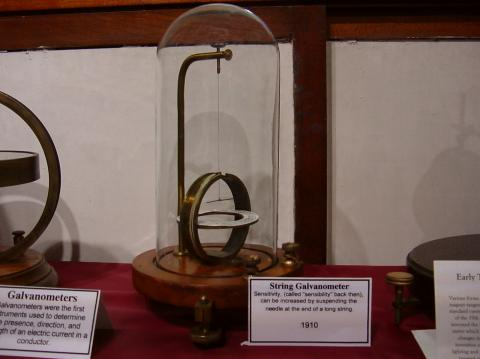
Estos instrumentos fueron útiles en su época, pero tienen poco lugar en el mundo moderno, excepto como prueba de concepto y dispositivos experimentales elementales. Son muy susceptibles a cualquier tipo de movimiento y a cualquier perturbación del campo magnético natural de la Tierra. Ahora bien, el término "galvanómetro" generalmente se refiere a cualquier diseño de movimiento de medidor electromagnético construido para una sensibilidad excepcional, y no necesariamente a un dispositivo tosco como el que se muestra en la fotografía. Ahora se pueden realizar movimientos prácticos de medidores electromagnéticos cuando una bobina de alambre pivotante está suspendida en un fuerte campo magnético, protegida de la mayoría de las influencias externas. Un diseño de instrumento de este tipo se conoce generalmente comoimán permanente, bobina móvil, oPMMCmovimiento:
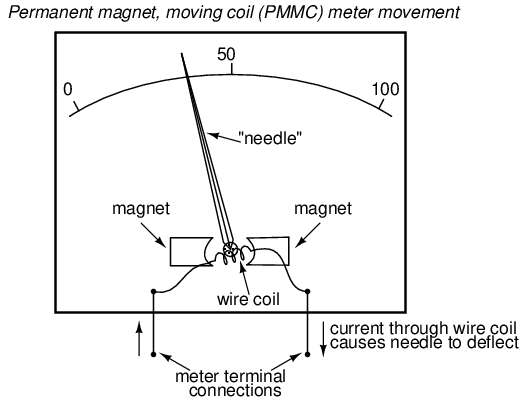
En la imagen de arriba, la "aguja" de movimiento del medidor se muestra apuntando alrededor del 35 por ciento de la escala completa, siendo el cero completamente a la izquierda del arco y la escala completa completamente a la derecha del arco. Un aumento en la corriente medida hará que la aguja apunte más hacia la derecha y una disminución hará que la aguja vuelva a caer hacia su punto de reposo a la izquierda. El arco en la pantalla del medidor está etiquetado con números para indicar el valor de la cantidad que se está midiendo, cualquiera que sea esa cantidad. En otras palabras, si se necesitan 50 microamperios de corriente para impulsar la aguja completamente hacia la derecha (haciendo de esto un "movimiento de escala completa de 50 µA"), la escala tendría 0 µA escrito en el extremo izquierdo y 50 µA en el extremo derecho, estando marcados 25 µA en el medio de la escala. Con toda probabilidad, la escala se dividiría en marcas de graduación mucho más pequeñas, probablemente cada 5 o 1 µA, para permitir a quien esté observando el movimiento inferir una lectura más precisa a partir de la posición de la aguja.
El movimiento del medidor tendrá un par de terminales de conexión metálicos en la parte posterior para que entre y salga la corriente. La mayoría de los movimientos del medidor son sensibles a la polaridad: una dirección de la corriente impulsa la aguja hacia la derecha y la otra hacia la izquierda. Algunos movimientos del medidor tienen una aguja cuyo resorte está centrado en el medio del barrido de la escala en lugar de hacia la izquierda, lo que permite mediciones de cualquier polaridad:
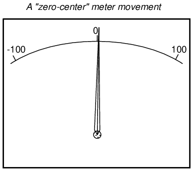
Los movimientos comunes sensibles a la polaridad incluyen los diseños D'Arsonval y Weston, ambos instrumentos de tipo PMMC. La corriente en una dirección a través del cable producirá un par en el sentido de las agujas del reloj en el mecanismo de la aguja, mientras que la corriente en la otra dirección producirá un par en el sentido contrario a las agujas del reloj.
Algunos movimientos del medidor son de polaridad.insensible, que depende de la atracción de una paleta de hierro móvil no magnetizada hacia un cable estacionario que transporta corriente para desviar la aguja. Estos medidores son ideales para medir corriente alterna (CA). Un movimiento sensible a la polaridad simplemente vibraría hacia adelante y hacia atrás inútilmente si se conectara a una fuente de CA.
Si bien la mayoría de los movimientos mecánicos de los medidores se basan en el electromagnetismo (el flujo de electrones a través de un conductor crea un campo magnético perpendicular), algunos se basan en la electrostática: es decir, la fuerza de atracción o repulsión generada por cargas eléctricas a través del espacio. Este es el mismo fenómeno que presentan ciertos materiales (como la cera y la lana) cuando se frotan entre sí. Si se aplica un voltaje entre dos superficies conductoras a través de un espacio de aire, habrá una fuerza física que atraerá las dos superficies y será capaz de mover algún tipo de mecanismo indicador. Esa fuerza física es directamente proporcional al voltaje aplicado entre las placas e inversamente proporcional al cuadrado de la distancia entre las placas. La fuerza también es independiente de la polaridad, lo que lo convierte en un tipo de movimiento del medidor insensible a la polaridad:
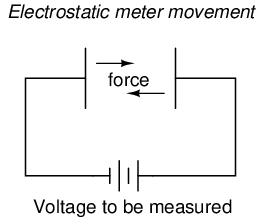
Desafortunadamente, la fuerza generada por la atracción electrostática esmuypequeño para voltajes comunes. De hecho, es tan pequeño que dichos diseños de movimiento de medidor no son prácticos para su uso en instrumentos de prueba generales. Normalmente, los movimientos de medidores electrostáticos se utilizan para medir voltajes muy altos (varios miles de voltios). Sin embargo, una gran ventaja del movimiento electrostático del medidor es el hecho de que tiene una resistencia extremadamente alta, mientras que los movimientos electromagnéticos (que dependen del flujo de electrones a través del cable para generar un campo magnético) tienen una resistencia mucho menor. Como veremos con mayor detalle más adelante, una mayor resistencia (lo que resulta en una menor corriente extraída del circuito bajo prueba) lo convierte en un mejor voltímetro.
Una aplicación mucho más común de la medición de voltaje electrostático se ve en un dispositivo conocido comoTubo de rayos catódicos, oCRT. Se trata de tubos de vidrio especiales, muy similares a los tubos de pantalla de televisión. En el tubo de rayos catódicos, un haz de electrones que viaja en el vacío se desvía de su curso por el voltaje entre pares de placas metálicas a cada lado del haz. Como los electrones tienen carga negativa, tienden a ser repelidos por la placa negativa y atraídos por la placa positiva. Una inversión de la polaridad del voltaje a través de las dos placas dará como resultado una desviación del haz de electrones en la dirección opuesta, lo que hace que este tipo de medidor sea sensible a la polaridad del "movimiento":
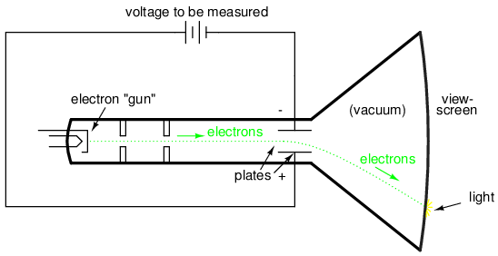
Los electrones, que tienen mucha menos masa que las placas metálicas, se mueven muy rápida y fácilmente gracias a esta fuerza electrostática. Su camino desviado se puede rastrear cuando los electrones inciden en el extremo de vidrio del tubo, donde golpean una capa de fósforo químico, emitiendo un brillo de luz que se ve fuera del tubo. Cuanto mayor sea el voltaje entre las placas de desviación, más se "desviará" el haz de electrones de su trayectoria recta y más lejos se verá el punto brillante desde el centro del extremo del tubo.
Aquí se muestra una fotografía de un CRT:
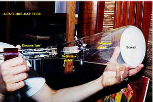
En un CRT real, como se muestra en la fotografía de arriba, hay dos pares de placas de desviación en lugar de solo una. Para poder barrer el haz de electrones alrededor de toda el área de la pantalla y no sólo en línea recta, el haz debe desviarse en más de una dimensión.
Aunque estos tubos pueden registrar con precisión pequeños voltajes, son voluminosos y requieren energía eléctrica para funcionar (a diferencia de los movimientos del medidor electromagnético, que son más compactos y accionados por la potencia de la corriente de señal medida que pasa a través de ellos). También son mucho más frágiles que otros tipos de dispositivos de medición eléctrica. Por lo general, los tubos de rayos catódicos se utilizan junto con circuitos externos precisos para formar una pieza más grande de equipo de prueba conocida comoosciloscopio, que tiene la capacidad de mostrar un gráfico de voltaje a lo largo del tiempo, una herramienta tremendamente útil para ciertos tipos de circuitos donde los niveles de voltaje y/o corriente cambian dinámicamente.
Cualquiera que sea el tipo de medidor o el tamaño del movimiento del medidor, habrá un valor nominal de voltaje o corriente necesario para brindar una indicación de escala completa. En los movimientos electromagnéticos, esta será la "corriente de desviación de escala completa" necesaria para girar la aguja de modo que apunte al extremo exacto de la escala indicadora. En los movimientos electrostáticos, el valor nominal de escala completa se expresará como el valor del voltaje que resulta en la máxima deflexión de la aguja accionada por las placas, o el valor del voltaje en un tubo de rayos catódicos que desvía el haz de electrones hacia el borde de la pantalla indicadora. En los "movimientos" digitales, es la cantidad de voltaje que da como resultado una indicación de "cuenta completa" en la pantalla numérica: cuando los dígitos no pueden mostrar una cantidad mayor.
La tarea del diseñador del medidor es tomar un movimiento dado del medidor y diseñar el circuito externo necesario para una indicación a escala completa en una cantidad específica de voltaje o corriente. La mayoría de los movimientos del medidor (excepto los movimientos electrostáticos) son bastante sensibles y dan una indicación de escala completa con sólo una pequeña fracción de un voltio o un amperio. Esto no es práctico para la mayoría de las tareas de medición de tensión y corriente. Lo que el técnico suele necesitar es un medidor capaz de medir altas tensiones y corrientes.
Al hacer que el movimiento sensible del medidor forme parte de un circuito divisor de voltaje o corriente, el rango de medición útil del movimiento puede ampliarse para medir niveles mucho mayores que los que podría indicar el movimiento solo. Las resistencias de precisión se utilizan para crear los circuitos divisores necesarios para dividir el voltaje o la corriente de manera adecuada. Una de las lecciones que aprenderá en este capítulo es cómo diseñar estos circuitos divisores.
- REVISAR:
- A "movimiento" es el mecanismo de visualización de un medidor.
- Los movimientos electromagnéticos funcionan según el principio de un campo magnético generado por una corriente eléctrica a través de un cable. Ejemplos de movimientos de medidores electromagnéticos incluyen los diseños D'Arsonval, Weston y paletas de hierro.
- Los movimientos electrostáticos funcionan según el principio de la fuerza física generada por un campo eléctrico entre dos placas.
- Tubos de rayos catódicos(CRT) utilizan un campo electrostático para doblar la trayectoria de un haz de electrones, proporcionando una indicación de la posición del haz mediante la luz creada cuando el haz incide en el extremo del tubo de vidrio.
Diseño de voltímetros
Como se indicó anteriormente, la mayoría de los movimientos de los medidores son dispositivos sensibles. Algunos movimientos D'Arsonval tienen corrientes nominales de deflexión a escala completa de tan solo 50 µA, con una resistencia del cable (interna) de menos de 1000 Ω. ¡Esto lo convierte en un voltímetro con una clasificación de escala completa de solo 50 milivoltios (50 µA X 1000 Ω)! Para construir voltímetros con escalas prácticas (voltaje más alto) a partir de movimientos tan sensibles, necesitamos encontrar alguna manera de reducir la cantidad medida de voltaje a un nivel que el movimiento pueda manejar.
Comencemos nuestros problemas de ejemplo con un movimiento de medidor D'Arsonval que tiene una deflexión de escala completa de 1 mA y una resistencia de bobina de 500 Ω:
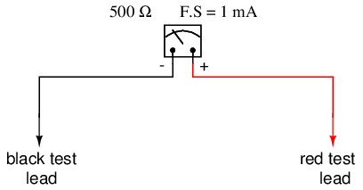
Usando la Ley de Ohm (E=IR), podemos determinar cuánto voltaje impulsará el movimiento de este medidor directamente a escala completa:
E = I R
E = (1 mA)(500 Ω)
E = 0.5 volts
Si todo lo que quisiéramos fuera un medidor que pudiera medir 1/2 voltio, el movimiento del medidor simple que tenemos aquí sería suficiente. Pero para medir mayores niveles de voltaje, se necesita algo más. Para obtener un rango efectivo de voltímetro superior a 1/2 voltio, necesitaremos diseñar un circuito que permita que solo una proporción precisa del voltaje medido caiga a través del movimiento del medidor. Esto ampliará el rango de movimiento del medidor a voltajes más altos. En consecuencia, necesitaremos volver a etiquetar la escala en la cara del medidor para indicar su nuevo rango de medición con este circuito dosificador conectado.
Pero, ¿cómo creamos el circuito proporcional necesario? Bueno, si nuestra intención es permitir que este movimiento del medidor mida una mayorVoltajeque ahora, lo que necesitamos es unadivisor de voltajecircuito para proporcionar el voltaje total medido en una fracción menor a través de los puntos de conexión del movimiento del medidor. Sabiendo que los circuitos divisores de voltaje se construyen a partir deserieresistencias, conectaremos una resistencia en serie con el movimiento del medidor (usando la resistencia interna del movimiento como segunda resistencia en el divisor):
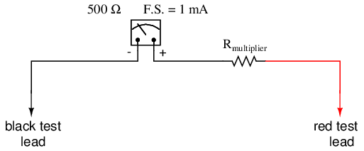
La resistencia en serie se llama resistencia "multiplicadora" porquemultiplicael rango de trabajo del movimiento del medidor ya que divide proporcionalmente el voltaje medido a través de él. Determinar el valor de resistencia multiplicadora requerido es una tarea fácil si está familiarizado con el análisis de circuitos en serie.
Por ejemplo, determinemos el valor multiplicador necesario para que este movimiento de 1 mA y 500 Ω se lea exactamente a escala completa con un voltaje aplicado de 10 voltios. Para hacer esto, primero necesitamos configurar una tabla E/I/R para los dos componentes de la serie:
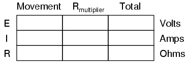
Sabiendo que el movimiento será a escala completa con 1 mA de corriente atravesándolo, y que queremos que esto suceda con un voltaje aplicado (circuito en serie total) de 10 voltios, podemos completar la tabla como tal:
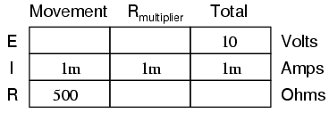
Hay un par de formas de determinar el valor de resistencia del multiplicador. Una forma es determinar la resistencia total del circuito usando la Ley de Ohm en la columna "total" (R=E/I), luego restar los 500 Ω del movimiento para llegar al valor del multiplicador:
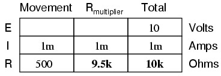
Otra forma de calcular el mismo valor de resistencia sería determinar la caída de voltaje a través del movimiento en la deflexión de escala completa (E=IR), luego restar esa caída de voltaje del total para llegar al voltaje a través de la resistencia multiplicadora. Finalmente, la Ley de Ohm podría usarse nuevamente para determinar la resistencia (R=E/I) del multiplicador:
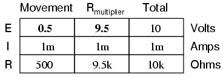
Cualquiera de las dos formas proporciona la misma respuesta (9,5 kΩ), y un método podría usarse como verificación del otro, para verificar la precisión del trabajo.
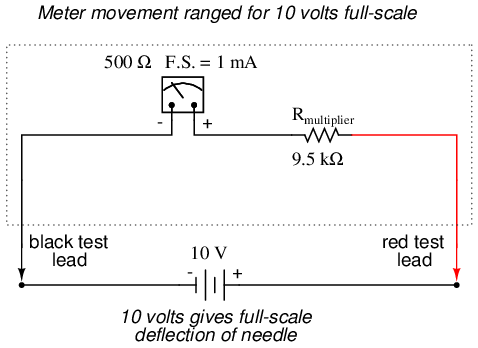
Con exactamente 10 voltios aplicados entre los cables de prueba del medidor (de alguna batería o fuente de alimentación de precisión), habrá exactamente 1 mA de corriente a través del movimiento del medidor, según lo restringido por la resistencia "multiplicadora" y la propia resistencia interna del movimiento. Se dejará caer exactamente 1/2 voltio a través de la resistencia de la bobina de alambre del movimiento y la aguja apuntará con precisión a la escala completa. Habiendo vuelto a etiquetar la báscula para leer de 0 a 10 V (en lugar de 0 a 1 mA), cualquiera que vea la báscula interpretará su indicación como diez voltios. Tenga en cuenta que el usuario del medidor no tiene que ser consciente en absoluto de que el movimiento en sí está midiendo en realidad sólo una fracción de esos diez voltios de la fuente externa. Lo único que le importa al usuario es que el circuito en su conjunto funcione para mostrar con precisión el voltaje total aplicado.
Así es como se diseñan y utilizan los medidores eléctricos prácticos: se construye un movimiento de medidor sensible para operar con el menor voltaje y corriente posible para obtener la máxima sensibilidad, luego es "engañado" por algún tipo de circuito divisor construido con resistencias de precisión para que indique la escala completa cuando se aplica un voltaje o corriente mucho mayor en el circuito en su conjunto. Aquí hemos examinado el diseño de un voltímetro simple. Los amperímetros siguen la misma regla general, excepto que se utilizan resistencias "en derivación" conectadas en paralelo para crear unadivisor de corrientecircuito a diferencia del conectado en seriedivisor de voltajeResistencias "multiplicadoras" utilizadas para diseños de voltímetros.
Generalmente, es útil tener múltiples rangos establecidos para un medidor electromecánico como este, lo que le permite leer una amplia gama de voltajes con un solo mecanismo de movimiento. Esto se logra mediante el uso de un interruptor multipolar y varias resistencias multiplicadoras, cada una dimensionada para un rango de voltaje particular:
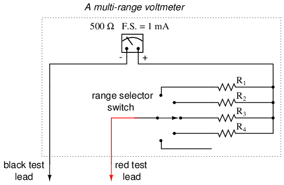
El interruptor de cinco posiciones hace contacto con una sola resistencia a la vez. En la posición inferior (completamente en el sentido de las agujas del reloj), hace contacto sin resistencia alguna, lo que proporciona una configuración de "apagado". Cada resistencia tiene un tamaño que proporciona un rango de escala completa particular para el voltímetro, todo ello basado en la clasificación particular del movimiento del medidor (1 mA, 500 Ω). El resultado final es un voltímetro con cuatro rangos de medición diferentes a escala completa. Por supuesto, para que esto funcione de manera sensata, la escala del movimiento del medidor debe estar equipada con etiquetas apropiadas para cada rango.
Con un diseño de medidor de este tipo, el valor de cada resistencia se determina mediante la misma técnica, utilizando un voltaje total conocido, un índice de deflexión de movimiento a escala completa y una resistencia al movimiento. Para un voltímetro con rangos de 1 voltio, 10 voltios, 100 voltios y 1000 voltios, las resistencias multiplicadoras serían las siguientes:
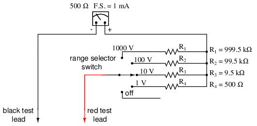
Tenga en cuenta los valores de resistencia multiplicadora utilizados para estos rangos y lo extraños que son. Es muy poco probable que alguna vez se encuentre una resistencia de precisión de 999,5 kΩ en un contenedor de piezas, por lo que los diseñadores de voltímetros a menudo optan por una variación del diseño anterior que utiliza valores de resistencia más comunes:
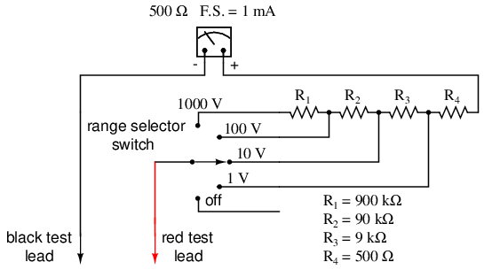
Con cada rango de voltaje sucesivamente más alto, el interruptor selector pone en servicio más resistencias multiplicadoras, lo que hace que sus resistencias en serie se sumen para obtener el total necesario. Por ejemplo, con el interruptor selector de rango en la posición de 1000 voltios, necesitamos un valor de resistencia multiplicadora total de 999,5 kΩ. Con este diseño de medidor, eso es exactamente lo que obtendremos:
RTotal = R4 + R3 + R2 + R1
RTotal= 900 kΩ + 90 kΩ + 9 kΩ + 500 Ω
RTotal= 999,5 kΩ
La ventaja, por supuesto, es que los valores de resistencia multiplicadora individual son más comunes (900k, 90k, 9k) que algunos de los valores impares del primer diseño (999,5k, 99,5k, 9,5k). Sin embargo, desde la perspectiva del usuario del medidor, no habrá ninguna diferencia perceptible en la función.
- REVISAR:
- Se crean rangos de voltímetro extendidos para movimientos sensibles del medidor agregando resistencias "multiplicadoras" en serie al circuito de movimiento, proporcionando una relación de división de voltaje precisa.
Efecto del voltímetro en el circuito medido
Cada medidor impacta el circuito que está midiendo hasta cierto punto, del mismo modo que cualquier medidor de presión de neumáticos cambia ligeramente la presión medida de los neumáticos cuando sale algo de aire para operar el medidor. Si bien cierto impacto es inevitable, se puede minimizar mediante un buen diseño del medidor.
Dado que los voltímetros siempre están conectados en paralelo con el componente o componentes bajo prueba, cualquier corriente que pase por el voltímetro contribuirá a la corriente general en el circuito probado, afectando potencialmente el voltaje que se está midiendo. Un voltímetro perfecto tiene una resistencia infinita, por lo que no extrae corriente del circuito bajo prueba. Sin embargo, los voltímetros perfectos sólo existen en las páginas de los libros de texto, ¡no en la vida real! Tome el siguiente circuito divisor de voltaje como un ejemplo extremo de cómo un voltímetro realista podría afectar el circuito que mide:
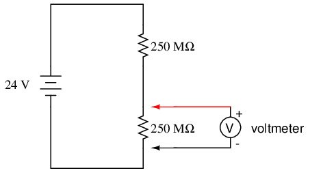
Sin un voltímetro conectado al circuito, debe haber exactamente 12 voltios en cada resistencia de 250 MΩ en el circuito en serie, y las dos resistencias de igual valor deben dividir el voltaje total (24 voltios) exactamente por la mitad. Sin embargo, si el voltímetro en cuestión tiene una resistencia entre conductores de 10 MΩ (una cantidad común para un voltímetro digital moderno), su resistencia creará un subcircuito paralelo con la resistencia inferior del divisor cuando esté conectado:
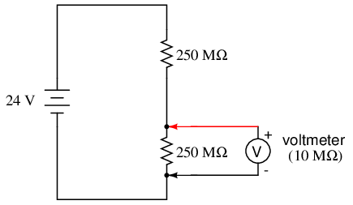
Esto reduce efectivamente la resistencia inferior de 250 MΩ a 9,615 MΩ (250 MΩ y 10 MΩ en paralelo), alterando drásticamente las caídas de voltaje en el circuito. La resistencia inferior ahora tendrá mucho menos voltaje que antes, y la resistencia superior mucho más.
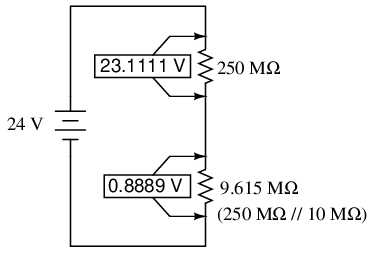
Un divisor de voltaje con valores de resistencia de 250 MΩ y 9,615 MΩ dividirá 24 voltios en porciones de 23,1111 voltios y 0,8889 voltios, respectivamente. Dado que el voltímetro forma parte de esa resistencia de 9,615 MΩ, eso es lo que indicará: 0,8889 voltios.
Ahora, el voltímetro sólo puede indicar el voltaje al que está conectado. No tiene forma de "saber" que hubo una caída de potencial de 12 voltios en la resistencia inferior de 250 MΩ.antesestaba conectado a través de él. El mismo acto de conectar el voltímetro al circuito lo convierte en parte del circuito, y la propia resistencia del voltímetro altera la relación de resistencia del circuito divisor de voltaje, afectando en consecuencia el voltaje que se está midiendo.
Imagínese usar un manómetro de neumáticos que requiriera un volumen de aire tan grande para funcionar que desinflaría cualquier neumático al que estuviera conectado. La cantidad de aire consumida por el manómetro en el acto de medir es análoga a la corriente que toma el movimiento del voltímetro para mover la aguja. Cuanto menos aire requiera un manómetro para funcionar, menos desinflará el neumático bajo prueba. Cuanta menos corriente consuma un voltímetro para accionar la aguja, menos cargará el circuito bajo prueba.
Este efecto se llamacargando, y está presente hasta cierto punto en todos los casos de uso de un voltímetro. El escenario que se muestra aquí es el peor de los casos, con una resistencia del voltímetro sustancialmente menor que las resistencias de las resistencias divisoras. Pero siempre habrá algún grado de carga, lo que hará que el medidor indique un voltaje menor que el verdadero sin ningún medidor conectado. Obviamente, cuanto mayor es la resistencia del voltímetro, menor es la carga del circuito bajo prueba, y es por eso que un voltímetro ideal tiene una resistencia interna infinita.
Los voltímetros con movimientos electromecánicos generalmente reciben clasificaciones en "ohmios por voltio" de rango para designar la cantidad de impacto del circuito creado por el consumo de corriente del movimiento. Debido a que estos medidores dependen de diferentes valores de resistencias multiplicadoras para proporcionar diferentes rangos de medición, sus resistencias de cable a cable cambiarán dependiendo del rango en el que estén configurados. Los voltímetros digitales, por otro lado, a menudo exhiben una resistencia constante en sus cables de prueba independientemente del ajuste del rango (¡pero no siempre!) y, como tales, generalmente se clasifican simplemente en ohmios de resistencia de entrada, en lugar de sensibilidad en "ohmios por voltio".
Lo que significa "ohmios por voltio" es cuántos ohmios de resistencia entre conductores por cada voltio deajuste de rangoen el interruptor selector. Tomemos como ejemplo nuestro voltímetro de ejemplo de la última sección:
En la escala de 1.000 voltios, la resistencia total es 1 MΩ (999,5 kΩ + 500 Ω), lo que da 1.000.000 Ω por 1.000 voltios de rango, o 1.000 ohmios por voltio (1 kΩ/V). Esta clasificación de "sensibilidad" de ohmios por voltio permanece constante para cualquier rango de este medidor:
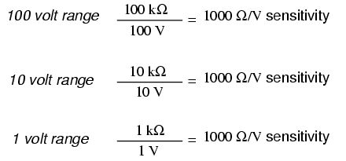
El observador astuto notará que la clasificación de ohmios por voltio de cualquier medidor está determinada por un solo factor: la corriente de escala completa del movimiento, en este caso 1 mA. "Ohmios por voltio" es el recíproco matemático de "voltios por ohmio", que la ley de Ohm define como corriente (I=E/R). En consecuencia, lacorrientede escala completa del movimiento dicta la sensibilidad Ω/voltios del medidor, independientemente de los rangos con los que lo equipe el diseñador a través de resistencias multiplicadoras. En este caso, la corriente nominal de escala completa del movimiento del medidor de 1 mA le da una sensibilidad del voltímetro de 1000 Ω/V independientemente de cómo lo clasificamos con resistencias multiplicadoras.
Para minimizar la carga de un voltímetro en cualquier circuito, el diseñador debe buscar minimizar el consumo de corriente de su movimiento. Esto se puede lograr rediseñando el movimiento en sí para lograr la máxima sensibilidad (se requiere menos corriente para una desviación a gran escala), pero la contrapartida aquí suele ser la robustez: un movimiento más sensible tiende a ser más frágil.
Otro enfoque consiste en aumentar electrónicamente la corriente enviada al movimiento, de modo que sea necesario extraer muy poca corriente del circuito bajo prueba. Este circuito electrónico especial se conoce comoamplificador, y el voltímetro así construido es unvoltímetro amplificado.
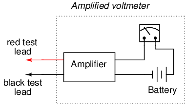
El funcionamiento interno de un amplificador es demasiado complejo para discutirlo en este punto, pero basta decir que el circuito permite que el voltaje medidocontrolcuánta corriente de la batería se envía al movimiento del medidor. Por tanto, las necesidades de corriente del movimiento son suministradas por una batería interna del voltímetro y no por el circuito bajo prueba. El amplificador todavía carga el circuito bajo prueba hasta cierto punto, pero generalmente cientos o miles de veces menos de lo que lo haría el movimiento del medidor por sí solo.
Antes de la llegada de los semiconductores conocidos como "transistores de efecto de campo", se utilizaban tubos de vacío como dispositivos amplificadores para realizar este impulso. Semejantevoltímetros de tubo de vacío, o(VTVM)Alguna vez fueron instrumentos muy populares para pruebas y mediciones electrónicas. Aquí hay una fotografía de un VTVM muy antiguo, ¡con el tubo de vacío expuesto!
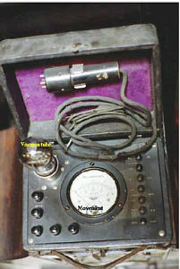
Ahora, los circuitos amplificadores de transistores de estado sólido realizan la misma tarea en los diseños de medidores digitales. Si bien este enfoque (de usar un amplificador para aumentar la corriente de la señal medida) funciona bien, complica enormemente el diseño del medidor, haciendo casi imposible que el estudiante principiante de electrónica comprenda su funcionamiento interno.
Una solución final e ingeniosa al problema de la carga del voltímetro es la delpotenciométrico o saldo nuloinstrumento. No requiere circuitos (electrónicos) avanzados ni dispositivos sensibles como transistores o tubos de vacío, pero sí requiere una mayor participación y habilidad de los técnicos. En un instrumento potenciométrico, una fuente de voltaje ajustable con precisión se compara con el voltaje medido y un dispositivo sensible llamadodetector nuloSe utiliza para indicar cuando los dos voltajes son iguales. En algunos diseños de circuitos, una precisiónpotenciómetrose utiliza para proporcionar el voltaje ajustable, de ahí la etiquetapotenciométrico. Cuando los voltajes son iguales, no habrá corriente extraída del circuito bajo prueba y, por lo tanto, el voltaje medido no debería verse afectado. Es fácil mostrar cómo funciona esto con nuestro último ejemplo, el circuito divisor de voltaje de alta resistencia:
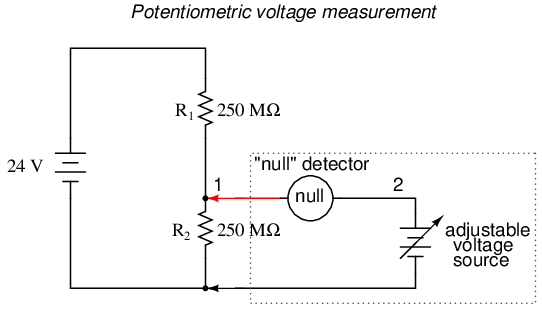
El "detector de nulos" es un dispositivo sensible capaz de indicar la presencia de tensiones muy pequeñas. Si se utiliza un movimiento de medidor electromecánico como detector nulo, tendrá una aguja centrada en un resorte que puede desviarse en cualquier dirección para que sea útil para indicar un voltaje de cualquier polaridad. Como el propósito de un detector nulo es indicar con precisión una condición decerovoltaje, en lugar de indicar cualquier cantidad específica (distinta de cero) como lo haría un voltímetro normal, la escala del instrumento utilizado es irrelevante. Los detectores nulos suelen estar diseñados para ser lo más sensibles posible a fin de indicar con mayor precisión una condición "nula" o "equilibrada" (voltaje cero).
Un tipo extremadamente simple de detector nulo es un par de auriculares de audio, cuyos parlantes actúan como una especie de medidor de movimiento. Cuando se aplica inicialmente un voltaje de CC a un altavoz, la corriente resultante a través de él moverá el cono del altavoz y producirá un "clic" audible. Se escuchará otro sonido de "clic" cuando se desconecte la fuente de CC. Sobre la base de este principio, se puede fabricar un detector nulo sensible con nada más que unos auriculares y un interruptor de contacto momentáneo:
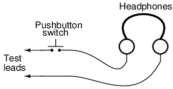
Si se utiliza un par de auriculares de "8 ohmios" para este propósito, su sensibilidad puede aumentar considerablemente conectándolo a un dispositivo llamadotransformador. El transformador aprovecha los principios del electromagnetismo para "transformar" los niveles de voltaje y corriente de los pulsos de energía eléctrica. En este caso, el tipo de transformador utilizado es unbajarTransformador y convierte pulsos de baja corriente (creados al cerrar y abrir el interruptor de botón mientras está conectado a una pequeña fuente de voltaje) en pulsos de corriente más alta para impulsar de manera más eficiente los conos de los altavoces dentro de los auriculares. Para este propósito es ideal un transformador de "salida de audio" con una relación de impedancia de 1000:8. El transformador también aumenta la sensibilidad del detector al acumular la energía de una señal de baja corriente en un campo magnético para liberarla repentinamente en los parlantes de los auriculares cuando se abre el interruptor. Por lo tanto, producirá "clics" más fuertes para detectar señales más pequeñas:
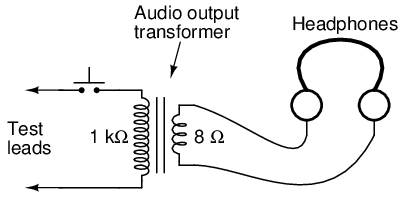
Conectado al circuito potenciométrico como detector nulo, la disposición interruptor/transformador/auriculares se utiliza como tal:
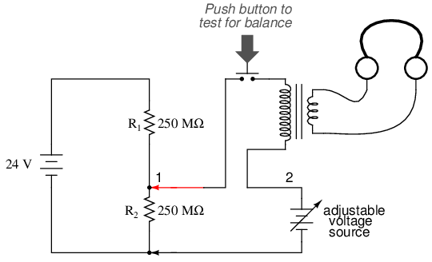
El propósito de cualquier detector nulo es actuar como una balanza de laboratorio, indicando cuando los dos voltajes son iguales (ausencia de voltaje entre los puntos 1 y 2) y nada más. La barra de equilibrio de la báscula de laboratorio en realidad no pesa nada; más bien, simplemente indicaigualdadentre la masa desconocida y la pila de masas estándar (calibradas).
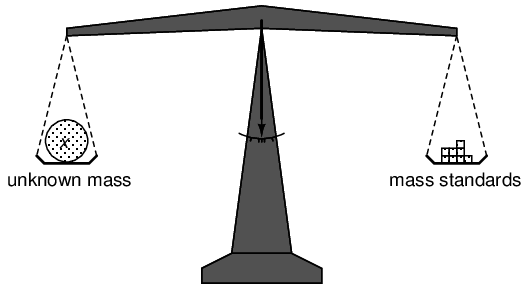
Asimismo, el detector nulo simplemente indica cuando el voltaje entre los puntos 1 y 2 son iguales, que (según la Ley de Voltaje de Kirchhoff) será cuando la fuente de voltaje ajustable (el símbolo de la batería con una flecha diagonal atravesándolo) sea exactamente igual en voltaje a la caída en R2.
Para operar este instrumento, el técnico ajustaría manualmente la salida de la fuente de voltaje de precisión hasta que el detector nulo indicara exactamente cero (si usa auriculares de audio como detector nulo, el técnico presionaría y soltaría repetidamente el interruptor del botón, escuchando el silencio para indicar que el circuito estaba "equilibrado"), y luego anotaría el voltaje de la fuente como lo indica un voltímetro conectado a través de la fuente de voltaje de precisión, siendo esa indicación representativa del voltaje a través de la resistencia inferior de 250 MΩ:
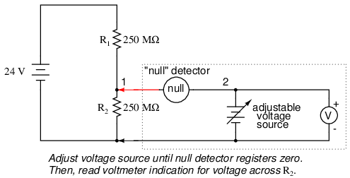
El voltímetro utilizado para medir directamente la fuente de precisión no necesita tener una sensibilidad Ω/V extremadamente alta, porque la fuente suministrará toda la corriente que necesita para funcionar. Mientras haya voltaje cero a través del detector nulo, habrá corriente cero entre los puntos 1 y 2, lo que equivale a que no haya carga en el circuito divisor bajo prueba.
Vale la pena reiterar el hecho de que este método, correctamente ejecutado, colocacarga casi nulasobre el circuito medido. Idealmente, no coloca absolutamente ninguna carga en el circuito probado, pero para lograr este objetivo ideal, el detector nulo debería tenervoltaje absolutamente cero a través de él, lo que requeriría un medidor nulo infinitamente sensible y un equilibrio perfecto de voltaje de la fuente de voltaje ajustable. Sin embargo, a pesar de su incapacidad práctica para lograr una carga de cero absoluto, un circuito potenciométrico sigue siendo una técnica excelente para medir voltaje en circuitos de alta resistencia. Y a diferencia de la solución del amplificador electrónico, que resuelve el problema con tecnología avanzada, el método potenciométrico logra una solución hipotéticamente perfecta al explotar una ley fundamental de la electricidad (KVL).
- REVISAR:
- Un voltímetro ideal tiene una resistencia infinita.
- Una resistencia interna demasiado baja en un voltímetro afectará negativamente al circuito que se está midiendo.
- Los voltímetros de tubo de vacío (VTVM), los voltímetros de transistores y los circuitos potenciométricos son medios para minimizar la carga colocada en un circuito medido. De estos métodos, la técnica potenciométrica ("equilibrio nulo") es la única capaz de colocarcerocarga en el circuito.
- A detector nuloes un dispositivo construido para una máxima sensibilidad a pequeños voltajes o corrientes. Se utiliza en circuitos de voltímetro potenciométrico para indicar laausenciade voltaje entre dos puntos, indicando así una condición de equilibrio entre una fuente de voltaje ajustable y el voltaje que se está midiendo.
Diseño de amperímetros
Un medidor diseñado para medir corriente eléctrica se llama popularmente "amperímetro" porque la unidad de medida es "amperios".
En los diseños de amperímetro, las resistencias externas agregadas para ampliar el rango utilizable del movimiento están conectadas enparalelocon el movimiento en lugar de en serie como es el caso de los voltímetros. Esto se debe a que queremos dividir la corriente medida, no el voltaje medido, que va al movimiento, y porque los circuitos divisores de corriente siempre están formados por resistencias paralelas.
Tomando el mismo movimiento del medidor que en el ejemplo del voltímetro, podemos ver que por sí solo sería un instrumento muy limitado, con una deflexión de escala completa que se produce a solo 1 mA:
Como es el caso de ampliar la capacidad de medición de voltaje de un movimiento de medidor, tendríamos que reetiquetar correspondientemente la escala del movimiento para que se lea de manera diferente para un rango de corriente extendido. Por ejemplo, si quisiéramos diseñar un amperímetro para que tenga un rango de escala completa de 5 amperios usando el mismo movimiento del medidor que antes (con un rango de escala completa intrínseco de solo 1 mA), tendríamos que volver a etiquetar la escala del movimiento para que lea 0 A en el extremo izquierdo y 5 A en el extremo derecho, en lugar de 0 mA a 1 mA como antes. Cualquiera que sea el rango ampliado proporcionado por las resistencias conectadas en paralelo, tendríamos que representarlo gráficamente en la cara del movimiento del medidor.
Usando 5 amperios como rango extendido para nuestro movimiento de muestra, determinemos la cantidad de resistencia paralela necesaria para "desviar" o derivar la mayor parte de la corriente de modo que solo 1 mA pase por el movimiento con una corriente total de 5 A:
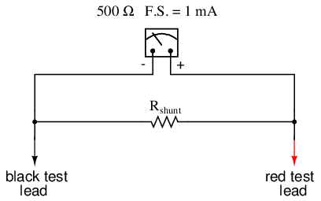
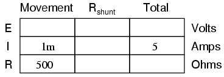
A partir de nuestros valores dados de corriente de movimiento, resistencia de movimiento y corriente total del circuito (medida), podemos determinar el voltaje a través del movimiento del medidor (Ley de Ohm aplicada a la columna central, E=IR):
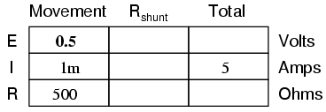
Sabiendo que el circuito formado por el movimiento y la derivación es de configuración paralela, sabemos que el voltaje entre los cables de movimiento, derivación y prueba (total) debe ser el mismo:
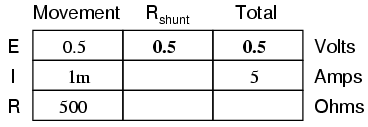
También sabemos que la corriente a través de la derivación debe ser la diferencia entre la corriente total (5 amperios) y la corriente a través del movimiento (1 mA), porque las corrientes derivadas se suman en una configuración en paralelo:
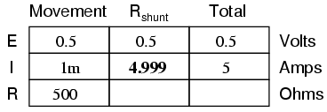
Luego, usando la Ley de Ohm (R=E/I) en la columna de la derecha, podemos determinar la resistencia en derivación necesaria:
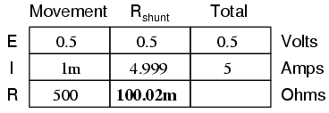
Por supuesto, podríamos haber calculado el mismo valor de poco más de 100 miliohmios (100 mΩ) para la derivación calculando la resistencia total (R=E/I; 0,5 voltios/5 amperios = 100 mΩ exactamente), y luego trabajando la fórmula de resistencia paralela al revés, pero la aritmética habría sido más desafiante:
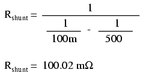
En la vida real, la resistencia en derivación de un amperímetro generalmente estará encerrada dentro de la carcasa metálica protectora de la unidad del medidor, oculta a la vista. Observe la construcción del amperímetro en la siguiente fotografía:
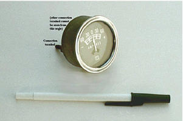
Este amperímetro en particular es una unidad automotriz fabricada por Stewart-Warner. Aunque el movimiento del medidor D'Arsonval en sí probablemente tenga una clasificación de escala completa en el rango de miliamperios, el medidor en su conjunto tiene un rango de +/- 60 amperios. La resistencia en derivación que proporciona este alto rango de corriente está encerrada dentro de la carcasa metálica del medidor. Tenga en cuenta también que con este medidor en particular la aguja se centra en cero amperios y puede indicar una corriente "positiva" o una corriente "negativa". Conectado al circuito de carga de la batería de un automóvil, este medidor es capaz de indicar una condición de carga (electrones que fluyen del generador a la batería) o una condición de descarga (electrones que fluyen de la batería al resto de cargas del automóvil).
Como es el caso de los voltímetros de rango múltiple, a los amperímetros se les puede dar más de un rango utilizable incorporando varias resistencias en derivación conmutadas con un interruptor multipolar:
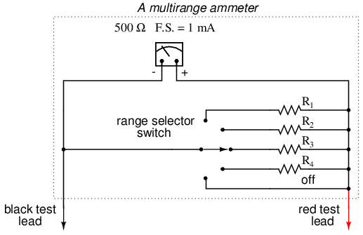
Observe que las resistencias de rango están conectadas a través del interruptor para estar en paralelo con el movimiento del medidor, en lugar de en serie como estaba en el diseño del voltímetro. Por supuesto, el interruptor de cinco posiciones hace contacto sólo con una resistencia a la vez. Cada resistencia tiene el tamaño correspondiente para un rango de escala completa diferente, según la clasificación particular del movimiento del medidor (1 mA, 500 Ω).
Con un diseño de medidor de este tipo, el valor de cada resistencia se determina mediante la misma técnica, utilizando una corriente total conocida, un índice de deflexión de movimiento a escala completa y una resistencia al movimiento. Para un amperímetro con rangos de 100 mA, 1 A, 10 A y 100 A, las resistencias en derivación serían las siguientes:
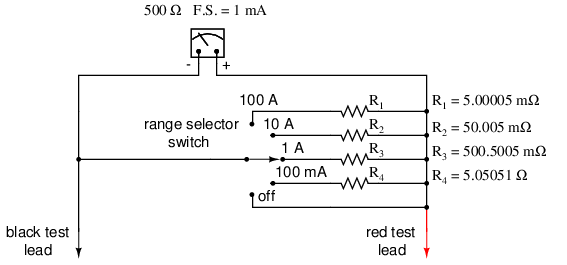
¡Observe que estos valores de resistencia de derivación son muy bajos! ¡5,00005 mΩ son 5,00005 miliohmios o 0,00500005 ohmios! Para lograr estas bajas resistencias, las resistencias de derivación de los amperímetros a menudo deben fabricarse a medida con alambre de diámetro relativamente grande o piezas sólidas de metal.
Una cosa a tener en cuenta al dimensionar las resistencias de derivación del amperímetro es el factor de disipación de potencia. A diferencia del voltímetro, las resistencias de rango de un amperímetro deben transportar grandes cantidades de corriente. Si esas resistencias de derivación no tienen el tamaño adecuado, pueden sobrecalentarse y sufrir daños o, al menos, perder precisión debido al sobrecalentamiento. Para el medidor de ejemplo anterior, las disipaciones de potencia en la indicación de escala completa son (las líneas garabateadas dobles representan "aproximadamente igual a" en matemáticas):
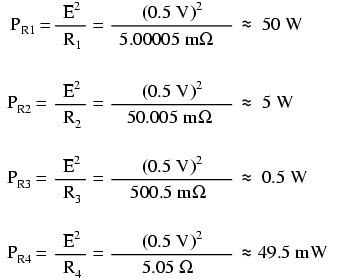
Una resistencia de 1/8 de vatio funcionaría bien para R4, una resistencia de 1/2 vatio sería suficiente para R3y un 5 vatios para R2(aunque las resistencias tienden a mantener mejor su precisión a largo plazo si no se operan cerca de su disipación de potencia nominal, por lo que es posible que desee sobrevalorar las resistencias R2y r3), pero las resistencias de precisión de 50 vatios son componentes raros y costosos. Es posible que sea necesario construir una resistencia personalizada hecha de metal o alambre grueso para R1para cumplir con los requisitos de baja resistencia y alta potencia nominal.
A veces, las resistencias en derivación se utilizan junto con voltímetros de alta resistencia de entrada para medir la corriente. En estos casos, la corriente a través del movimiento del voltímetro es lo suficientemente pequeña como para considerarse insignificante, y la resistencia en derivación se puede dimensionar de acuerdo con cuántos voltios o milivoltios de caída se producirán por amperio de corriente:
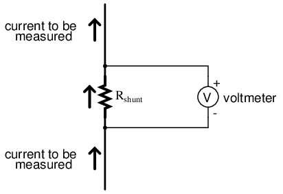
Si, por ejemplo, la resistencia en derivación en el circuito anterior tuviera un tamaño exacto de 1 Ω, caería 1 voltio por cada amperio de corriente que la atravesara. La indicación del voltímetro podría entonces tomarse como una indicación directa de la corriente a través de la derivación. Para medir corrientes muy pequeñas, se podrían usar valores más altos de resistencia en derivación para generar más caída de voltaje por unidad de corriente dada, extendiendo así el rango utilizable del (voltímetro) hacia cantidades más bajas de corriente. El uso de voltímetros junto con resistencias en derivación de bajo valor para medir la corriente es algo que se ve comúnmente en aplicaciones industriales.
El uso de una resistencia en derivación junto con un voltímetro para medir la corriente puede ser un truco útil para simplificar la tarea de realizar mediciones frecuentes de corriente en un circuito. Normalmente, para medir la corriente a través de un circuito con un amperímetro, el circuito tendría que romperse (interrumpirse) e insertarse el amperímetro entre los extremos de los cables separados, así:
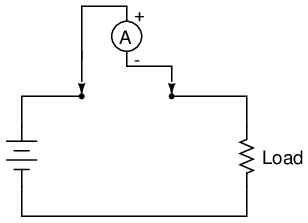
Si tenemos un circuito donde es necesario medir la corriente con frecuencia, o simplemente nos gustaría hacer que el proceso de medición de la corriente sea más conveniente, se podría colocar una resistencia en derivación entre esos puntos y dejarla allí permanentemente, tomando lecturas de corriente con un voltímetro según sea necesario sin interrumpir la continuidad en el circuito:
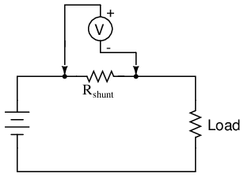
Por supuesto, se debe tener cuidado al dimensionar la resistencia en derivación lo suficientemente baja como para que no afecte negativamente el funcionamiento normal del circuito, pero esto generalmente no es difícil de hacer. Esta técnica también podría ser útil en el análisis de circuitos de computadora, donde es posible que deseemos que la computadora muestre la corriente a través de un circuito en términos de voltaje (con SPICE, esto nos permitiría evitar la idiosincrasia de leer valores de corriente negativos):
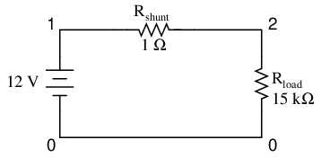
shunt resistor example circuit v1 1 0 rshunt 1 2 1 rload 2 0 15k .dc v1 12 12 1 .print dc v(1,2) .end
v1 v(1,2) 1.200E+01 7.999E-04
Interpretaríamos la lectura de voltaje a través de la resistencia en derivación (entre los nodos del circuito 1 y 2 en la simulación SPICE) directamente como amperios, siendo 7.999E-04 0,7999 mA o 799,9 µA. Idealmente, 12 voltios aplicados directamente a través de 15 kΩ nos darían exactamente 0,8 mA, pero la resistencia de la derivación disminuye esa corriente sólo un poquito (como lo haría en la vida real). Sin embargo, un error tan pequeño generalmente está dentro de los límites aceptables de precisión ya sea para una simulación o un circuito real, por lo que las resistencias en derivación se pueden usar en todas las aplicaciones, excepto en las más exigentes, para una medición de corriente precisa.
- REVISAR:
- Los rangos de amperímetro se crean agregando resistencias "en derivación" paralelas al circuito de movimiento, lo que proporciona una división de corriente precisa.
- Las resistencias en derivación pueden tener disipaciones de potencia altas, ¡así que tenga cuidado al elegir piezas para dichos medidores!
- Las resistencias en derivación se pueden utilizar junto con voltímetros de alta resistencia, así como con movimientos de amperímetro de baja resistencia, produciendo caídas de voltaje precisas para cantidades determinadas de corriente. Las resistencias en derivación deben seleccionarse con un valor de resistencia lo más bajo posible para minimizar su impacto en el circuito bajo prueba.
Efecto del amperímetro en el circuito medido
Al igual que los voltímetros, los amperímetros tienden a influir en la cantidad de corriente en los circuitos a los que están conectados. Sin embargo, a diferencia del voltímetro ideal, el amperímetro ideal tiene una resistencia interna cero, de modo que la caída de voltaje sea la menor posible a medida que los electrones fluyen a través de él. Tenga en cuenta que este valor de resistencia ideal es exactamente opuesto al de un voltímetro. Con los voltímetros, queremos que se extraiga la menor cantidad de corriente posible del circuito bajo prueba. Con los amperímetros, queremos que caiga la menor cantidad de voltaje posible mientras se conduce corriente.
A continuación se muestra un ejemplo extremo del efecto de un amperímetro en un circuito:
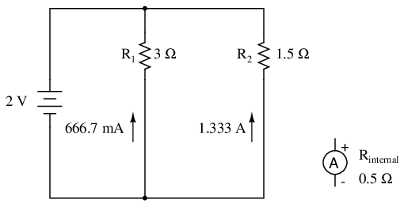
Con el amperímetro desconectado de este circuito, la corriente a través de la resistencia de 3 Ω sería de 666,7 mA y la corriente a través de la resistencia de 1,5 Ω sería de 1,33 amperios. Sin embargo, si el amperímetro tuviera una resistencia interna de 1/2 Ω y se insertara en una de las ramas de este circuito, su resistencia afectaría seriamente la corriente medida de la rama:
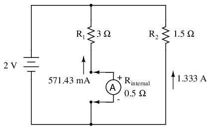
Habiendo aumentado efectivamente la resistencia de la rama izquierda de 3 Ω a 3,5 Ω, el amperímetro leerá 571,43 mA en lugar de 666,7 mA. Colocar el mismo amperímetro en la rama derecha afectaría aún más la corriente:
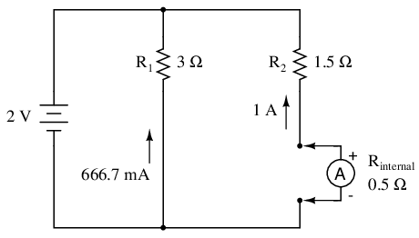
Ahora la corriente de la rama derecha es de 1 amperio en lugar de 1,333 amperios, debido al aumento en la resistencia creada por la adición del amperímetro a la ruta de la corriente.
Cuando se utilizan amperímetros estándar que se conectan en serie con el circuito que se está midiendo, puede que no sea práctico o posible rediseñar el medidor para una resistencia de entrada más baja (conductor a conductor). Sin embargo, si estuviéramos seleccionando un valor de resistencia en derivación para colocar en el circuito para una medición de corriente basada en la caída de voltaje, y pudiéramos elegir entre una amplia gama de resistencias, sería mejor elegir la resistencia práctica más baja para la aplicación. Si hay más resistencia de la necesaria, la derivación puede afectar negativamente al circuito al agregar una resistencia excesiva en la ruta de la corriente.
Una forma ingeniosa de reducir el impacto que tiene un dispositivo de medición de corriente en un circuito es utilizar el cable del circuito como parte del propio movimiento del amperímetro. Todos los cables por los que circula corriente producen un campo magnético cuya intensidad es directamente proporcional a la intensidad de la corriente. Construyendo un instrumento que mida la fuerza de ese campo magnético, se puede producir un amperímetro sin contacto. Un medidor de este tipo es capaz de medir la corriente a través de un conductor sin siquiera tener que hacer contacto físico con el circuito, y mucho menos romper la continuidad o insertar resistencia adicional.
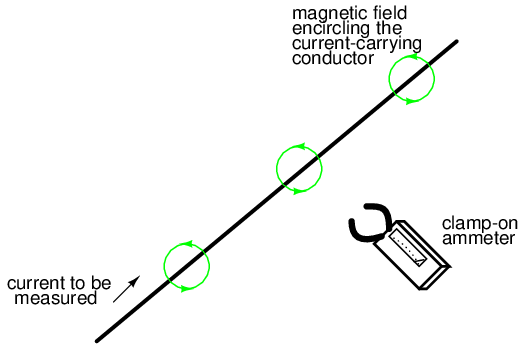
Se fabrican amperímetros de este diseño y se denominan "abrazadera" medidores porque tienen "mordazas" que se pueden abrir y luego fijar alrededor de un cable de circuito. Los amperímetros de pinza permiten mediciones de corriente rápidas y seguras, especialmente en circuitos industriales de alta potencia. Debido a que el circuito bajo prueba no ha tenido resistencia adicional insertada por un medidor de pinza, no se induce ningún error al tomar una medición de corriente.
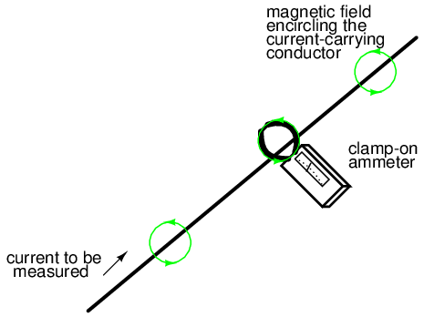
El mecanismo de movimiento real de un amperímetro de pinza es muy parecido al de un instrumento de paletas de hierro, excepto que no hay una bobina de alambre interna para generar el campo magnético. Los diseños más modernos de amperímetros de pinza utilizan un pequeño dispositivo detector de campo magnético llamadoSensor de efecto Hallpara determinar con precisión la intensidad del campo. Algunas pinzas amperimétricas contienen circuitos amplificadores electrónicos para generar un pequeño voltaje proporcional a la corriente en el cable entre las mordazas, ese pequeño voltaje se conecta a un voltímetro para que un técnico lo lea cómodamente. Por tanto, una unidad de pinza puede ser un dispositivo accesorio de un voltímetro para medir la corriente.
En la siguiente fotografía se muestra un tipo de amperímetro con detección de campo magnético menos preciso que el estilo de abrazadera:
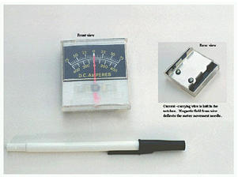
El principio de funcionamiento de este amperímetro es idéntico al del medidor de pinza: el campo magnético circular que rodea un conductor que transporta corriente desvía la aguja del medidor, produciendo una indicación en la escala. Observe que hay dos escalas de corriente en este medidor en particular: +/- 75 amperios y +/- 400 amperios. Estas dos escalas de medición corresponden a los dos conjuntos de muescas en la parte posterior del medidor. Dependiendo del conjunto de muescas en las que se coloque el conductor portador de corriente, una determinada intensidad del campo magnético tendrá un efecto diferente en la aguja. En efecto, las dos posiciones diferentes del conductor en relación con el movimiento actúan como dos resistencias de rango diferente en un estilo de amperímetro de conexión directa.
- REVISAR:
- Un amperímetro ideal tiene resistencia cero.
- Un amperímetro de "pinza" mide la corriente a través de un cable midiendo la fuerza del campo magnético a su alrededor en lugar de convertirse en parte del circuito, lo que lo convierte en un amperímetro ideal.
- Las pinzas amperimétricas permiten realizar mediciones de corriente rápidas y seguras, porque no hay contacto conductor entre el medidor y el circuito.
Diseño de ohmímetros
Aunque los diseños de óhmetros mecánicos (medidores de resistencia) rara vez se utilizan hoy en día, ya que han sido reemplazados en gran medida por instrumentos digitales, su funcionamiento es, no obstante, intrigante y digno de estudio.
El propósito de un óhmetro, por supuesto, es medir la resistencia colocada entre sus cables. Esta lectura de resistencia se indica mediante un movimiento mecánico del medidor que funciona con corriente eléctrica. Luego, el óhmetro debe tener una fuente interna de voltaje para crear la corriente necesaria para operar el movimiento, y también tener resistencias de rango apropiadas para permitir la cantidad justa de corriente a través del movimiento con cualquier resistencia dada.
Comenzando con un sencillo circuito de movimiento y batería, veamos cómo funcionaría como óhmetro:
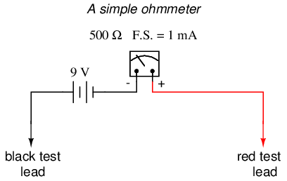
Cuando hay resistencia infinita (no hay continuidad entre los cables de prueba), hay corriente cero a través del movimiento del medidor y la aguja apunta hacia el extremo izquierdo de la escala. En este sentido, la indicación del óhmetro está "al revés" porque la indicación máxima (infinito) está a la izquierda de la escala, mientras que los medidores de voltaje y corriente tienen el cero a la izquierda de sus escalas.
Si los cables de prueba de este óhmetro están en cortocircuito directamente (midiendo cero Ω), el movimiento del medidor tendrá una cantidad máxima de corriente a través de él, limitada únicamente por el voltaje de la batería y la resistencia interna del movimiento:
Con 9 voltios de potencial de batería y solo 500 Ω de resistencia al movimiento, la corriente de nuestro circuito será de 18 mA, que está mucho más allá de la clasificación de escala completa del movimiento. Un exceso de corriente de este tipo probablemente dañará el medidor.
No sólo eso, sino que tener tal condición limita la utilidad del dispositivo. Si el lado izquierdo de la escala en la cara del medidor representa una cantidad infinita de resistencia, entonces el lado derecho de la escala debería representar cero. Actualmente, nuestro diseño "fija" el movimiento del medidor fuertemente hacia la derecha cuando se aplica resistencia cero entre los cables. Necesitamos una manera de lograr que el movimiento registre la escala completa cuando los cables de prueba estén en cortocircuito. Esto se logra agregando una resistencia en serie al circuito del medidor:
Para determinar el valor adecuado de R, calculamos la resistencia total del circuito necesaria para limitar la corriente a 1 mA (deflexión de escala completa en el movimiento) con 9 voltios de potencial de la batería, luego restamos la resistencia interna del movimiento de esa cifra:
Ahora que se ha calculado el valor correcto de R, todavía nos queda el problema del alcance del medidor. En el lado izquierdo de la escala tenemos "infinito" y en el lado derecho tenemos cero. Además de estar "al revés" de las escalas de voltímetros y amperímetros, esta escala es extraña porque va de nada a todo, en lugar de ir de nada a un valor finito (como 10 voltios, 1 amperio, etc.). Uno podría detenerse a preguntarse: "¿qué representa el punto medio de la escala? ¿Qué cifra se encuentra exactamente entre el cero y el infinito?" El infinito es más que sólo unmuy grandeCantidad: es una cantidad incalculable, mayor que cualquier número definido. Si la indicación de media escala en cualquier otro tipo de medidor representa la mitad del valor del rango de escala completa, entonces ¿qué es la mitad del infinito en la escala de un óhmetro?
La respuesta a esta paradoja es unaescala no lineal. En pocas palabras, la escala de un óhmetro no progresa suavemente de cero a infinito cuando la aguja se desplaza de derecha a izquierda. Más bien, la escala comienza "ampliada" en el lado derecho, con los sucesivos valores de resistencia acercándose cada vez más entre sí hacia el lado izquierdo de la escala:
No se puede aproximar al infinito de forma lineal (par), porque la escalanunca¡llegar allí! Con una escala no lineal, la cantidad de resistencia abarcada para cualquier distancia dada en la escala aumenta a medida que la escala avanza hacia el infinito, haciendo del infinito una meta alcanzable.
Sin embargo, todavía tenemos una cuestión del alcance de nuestro óhmetro. ¿Qué valor de resistencia entre los cables de prueba causará exactamente una desviación de 1/2 escala de la aguja? Si sabemos que el movimiento tiene una clasificación de escala completa de 1 mA, entonces 0,5 mA (500 µA) debe ser el valor necesario para la deflexión de media escala. Siguiendo nuestro diseño con la batería de 9 voltios como fuente obtenemos:
Con una resistencia de movimiento interna de 500 Ω y una resistencia de rango en serie de 8,5 kΩ, esto deja 9 kΩ para una resistencia de prueba externa (conductor a conductor) a 1/2 escala. En otras palabras, la resistencia de prueba que da una desviación de 1/2 escala en un óhmetro es igual en valor a la resistencia total en serie (interna) del circuito del medidor.
Usando la Ley de Ohm unas cuantas veces más, también podemos determinar el valor de resistencia de prueba para una deflexión de escala de 1/4 y 3/4:
1/4 scale deflection (0.25 mA of meter current):
3/4 scale deflection (0.75 mA of meter current):
Entonces, la escala de este óhmetro se ve así:
Un problema importante con este diseño es su dependencia de un voltaje de batería estable para una lectura precisa de la resistencia. Si el voltaje de la batería disminuye (como sucede con todas las baterías químicas con el tiempo y el uso), la escala del óhmetro perderá precisión. Con la resistencia de rango en serie en un valor constante de 8,5 kΩ y el voltaje de la batería disminuyendo, el medidor ya no se desviará completamente hacia la derecha cuando los cables de prueba estén en cortocircuito (0 Ω). Del mismo modo, una resistencia de prueba de 9 kΩ no logrará desviar la aguja exactamente a 1/2 escala con un voltaje de batería menor.
Existen técnicas de diseño que se utilizan para compensar la variación del voltaje de la batería, pero no solucionan completamente el problema y, en el mejor de los casos, deben considerarse aproximaciones. Por este motivo, y por el hecho de tener una escala no lineal, este tipo de óhmetro nunca se considera un instrumento de precisión.
Es necesario mencionar una última advertencia con respecto a los óhmetros: solo funcionan correctamente cuando miden resistencias que no están alimentadas por una fuente de voltaje o corriente. En otras palabras, ¡no se puede medir la resistencia con un óhmetro en un circuito "activo"! La razón de esto es simple: la indicación precisa del óhmetro depende de que la única fuente de voltaje sea su batería interna. La presencia de cualquier voltaje en el componente a medir interferirá con el funcionamiento del óhmetro. Si el voltaje es lo suficientemente grande, puede incluso dañar el óhmetro.
- REVISAR:
- Los óhmetros contienen fuentes internas de voltaje para suministrar energía al tomar medidas de resistencia.
- La escala de un óhmetro analógico está "al revés" de la de un voltímetro o amperímetro, la aguja de movimiento indica resistencia cero en escala completa y resistencia infinita en reposo.
- Los óhmetros analógicos también tienen escalas no lineales, "expandidas" en el extremo inferior de la escala y "comprimidas" en el extremo superior para poder abarcar desde cero hasta una resistencia infinita.
- Los óhmetros analógicos no son instrumentos de precisión.
- Los ohmímetros debennuncaestar conectado a un circuito energizado (es decir, un circuito con su propia fuente de voltaje). Cualquier voltaje aplicado a los cables de prueba de un óhmetro invalidará su lectura.
Ohmímetros de alta tensión
La mayoría de los óhmetros del diseño mostrado en la sección anterior utilizan una batería de voltaje relativamente bajo, generalmente nueve voltios o menos. Esto es perfectamente adecuado para medir resistencias por debajo de varios megaohmios (MΩ), pero cuando es necesario medir resistencias extremadamente altas, una batería de 9 voltios es insuficiente para generar suficiente corriente para activar el movimiento del medidor electromecánico.
Además, como se analizó en un capítulo anterior, la resistencia no siempre es una cantidad estable (lineal). Esto es especialmente cierto en el caso de los no metales. Recuerde el gráfico de corriente sobre voltaje para un espacio de aire pequeño (menos de una pulgada):

Si bien este es un ejemplo extremo de conducción no lineal, otras sustancias exhiben propiedades aislantes/conductoras similares cuando se exponen a altos voltajes. Obviamente, un óhmetro que utiliza una batería de bajo voltaje como fuente de energía no puede medir la resistencia al potencial de ionización de un gas o al voltaje de ruptura de un aislante. Si es necesario medir tales valores de resistencia, nada más que un óhmetro de alto voltaje será suficiente.
El método más directo de medición de resistencia de alto voltaje implica simplemente sustituir una batería de mayor voltaje en el mismo diseño básico de óhmetro investigado anteriormente:
Sin embargo, sabiendo que la resistencia de algunos materiales tiende a cambiar con el voltaje aplicado, sería ventajoso poder ajustar el voltaje de este óhmetro para obtener mediciones de resistencia en diferentes condiciones:
Desafortunadamente, esto crearía un problema de calibración para el medidor. Si el movimiento del medidor se desvía a escala completa con una cierta cantidad de corriente a través de él, el rango de escala completa del medidor en ohmios cambiaría a medida que cambiara el voltaje de la fuente. Imagine conectar una resistencia estable a través de los cables de prueba de este óhmetro mientras varía el voltaje de la fuente: a medida que aumenta el voltaje, habrá más corriente a través del movimiento del medidor y, por lo tanto, una mayor cantidad de deflexión. Lo que realmente necesitamos es un movimiento del medidor que produzca una deflexión constante y estable para cualquier valor de resistencia estable medido, independientemente del voltaje aplicado.
Lograr este objetivo de diseño requiere un movimiento especial del medidor, uno que es peculiar demegaóhmetros, omeggers, como se conocen estos instrumentos.
Los bloques rectangulares numerados en la ilustración anterior son representaciones en sección transversal de bobinas de alambre. Todas estas tres bobinas se mueven con el mecanismo de aguja. No hay ningún mecanismo de resorte para devolver la aguja a una posición establecida. Cuando el movimiento no está activado, la aguja "flotará" aleatoriamente. Las bobinas están conectadas eléctricamente así:
Con una resistencia infinita entre los cables de prueba (circuito abierto), no habrá corriente a través de la bobina 1, solo a través de las bobinas 2 y 3. Cuando se energizan, estas bobinas intentan centrarse en el espacio entre los dos polos magnéticos, impulsando la aguja completamente hacia la derecha de la escala donde apunta al "infinito".
Cualquier corriente a través de la bobina 1 (a través de una resistencia medida conectada entre los cables de prueba) tiende a llevar la aguja hacia la izquierda de la escala, de regreso a cero. Los valores de resistencia interna del movimiento del medidor están calibrados de modo que cuando los cables de prueba se cortocircuitan, la aguja se desvía exactamente a la posición de 0 Ω.
Debido a que cualquier variación en el voltaje de la batería afectará el par generado porambosconjuntos de bobinas (bobinas 2 y 3, que impulsan la aguja hacia la derecha, y bobina 1, que impulsa la aguja hacia la izquierda), esas variaciones no tendrán ningún efecto en la calibración del movimiento. En otras palabras, la precisión del movimiento de este óhmetro no se ve afectada por el voltaje de la batería: una determinada cantidad de resistencia medida producirá una cierta desviación de la aguja, sin importar cuánto o poco voltaje de la batería esté presente.
El único efecto que tendrá una variación en el voltaje en la indicación del medidor es el grado en que la resistencia medida cambia con el voltaje aplicado. Entonces, si usáramos un megger para medir la resistencia de una lámpara de descarga de gas, leería una resistencia muy alta (la aguja en el extremo derecho de la escala) para voltajes bajos y una resistencia baja (la aguja se mueve hacia la izquierda de la escala) para voltajes altos. Esto es precisamente lo que esperamos de un buen óhmetro de alto voltaje: proporcionar una indicación precisa de la resistencia del sujeto en diferentes circunstancias.
Para máxima seguridad, la mayoría de los meggers están equipados con generadores de manivela para producir alto voltaje de CC (hasta 1000 voltios). Si el operador del medidor recibe una descarga debido al alto voltaje, la condición se autocorregirá, ya que naturalmente dejará de hacer girar el generador. A veces se utiliza un "embrague deslizante" para estabilizar la velocidad del generador en diferentes condiciones de arranque, a fin de proporcionar un voltaje bastante estable ya sea que se arranque rápido o lento. Múltiples niveles de salida de voltaje del generador están disponibles mediante la configuración de un interruptor selector.
En esta fotografía se muestra un megger de manivela simple:
Algunos meggers funcionan con baterías para proporcionar una mayor precisión en el voltaje de salida. Por razones de seguridad, estos meggers se activan mediante un interruptor de botón de contacto momentáneo, por lo que el interruptor no se puede dejar en la posición "encendido" y representa un riesgo significativo de descarga eléctrica para el operador del medidor.
Los meggers reales están equipados con tres terminales de conexión, etiquetadosLínea, Tierra, yGuardia. El esquema es bastante similar a la versión simplificada mostrada anteriormente:
La resistencia se mide entre los terminales de Línea y Tierra, donde la corriente viajará a través de la bobina 1. El terminal "Guardia" se proporciona para situaciones de prueba especiales en las que una resistencia debe aislarse de otra. Tomemos, por ejemplo, este escenario en el que se va a probar la resistencia de aislamiento en un cable de dos hilos:
Para medir la resistencia de aislamiento de un conductor al exterior del cable, necesitamos conectar el cable de "Línea" del megger a uno de los conductores y conectar el cable de "Tierra" del megger a un cable enrollado alrededor de la funda del cable:
En esta configuración, el megger debe leer la resistencia entre un conductor y la funda exterior. ¿O lo será? Si dibujamos un diagrama esquemático que muestra todas las resistencias de aislamiento como símbolos de resistencia, lo que tenemos se ve así:
En lugar de simplemente medir la resistencia del segundo conductor a la funda (Rc2-s), lo que realmente mediremos es esa resistencia en paralelo con la combinación en serie de resistencia de conductor a conductor (Rc1-c2) y el primer conductor a la vaina (Rc1-s). Si no nos importa este hecho, podemos continuar con la prueba según lo configurado. Si deseamos medirsolola resistencia entre el segundo conductor y la funda (Rc2-s), entonces necesitamos usar la terminal "Guard" del megger:
Ahora el esquema del circuito se ve así:
Al conectar el terminal "Guard" al primer conductor, los dos conductores tienen un potencial casi igual. Con poco o ningún voltaje entre ellos, la resistencia de aislamiento es casi infinita y, por lo tanto, no habrá corriente.entrelos dos conductores. En consecuencia, la indicación de resistencia del megger se basará exclusivamente en la corriente a través del aislamiento del segundo conductor, a través de la funda del cable y al cable enrollado, no en la corriente que se escapa a través del aislamiento del primer conductor.
Los meggers son instrumentos de campo: es decir, están diseñados para ser portátiles y operados por un técnico en el lugar de trabajo con tanta facilidad como un óhmetro normal. Son muy útiles para comprobar fallos "cortos" de alta resistencia entre cables provocados por aislamiento húmedo o degradado. Debido a que utilizan voltajes tan altos, no se ven tan afectados por los voltajes parásitos (voltajes inferiores a 1 voltio producidos por reacciones electroquímicas entre conductores, o "inducidos" por campos magnéticos vecinos) como los óhmetros ordinarios.
Para una prueba más exhaustiva del aislamiento de los cables, se utiliza otro óhmetro de alto voltaje comúnmente llamadohola-potSe utiliza el probador. Estos instrumentos especializados producen voltajes superiores a 1 kV y pueden usarse para probar la efectividad aislante del aceite, aisladores cerámicos e incluso la integridad de otros instrumentos de alto voltaje. Debido a que son capaces de producir voltajes tan altos, deben ser operados con sumo cuidado y sólo por personal capacitado.
Cabe señalar que los probadores de alta potencia e incluso los meggers (en determinadas condiciones) son capaces deperjudicialaislamiento del cable si se usa incorrectamente. Una vez que un material aislante ha sido sometido adescomponerpor la aplicación de un voltaje excesivo, su capacidad de aislamiento eléctrico se verá comprometida. Nuevamente, estos instrumentos deben ser utilizados únicamente por personal capacitado.
Multimeters
Teniendo en cuenta cómo se puede hacer que un movimiento de medidor común funcione como un voltímetro, amperímetro u óhmetro simplemente conectándolo a diferentes redes de resistencias externas, debería tener sentido que se pueda diseñar un medidor multiuso ("multímetro") en una unidad con los interruptores y resistencias apropiados.
Para trabajos de electrónica de uso general, el multímetro reina como el instrumento preferido. Ningún otro dispositivo es capaz de hacer tanto con tan poca inversión en piezas y una elegante simplicidad de funcionamiento. Como ocurre con la mayoría de las cosas en el mundo de la electrónica, la llegada de componentes de estado sólido como los transistores ha revolucionado la forma en que se hacen las cosas, y el diseño de los multímetros no es una excepción a esta regla. Sin embargo, de acuerdo con el énfasis de este capítulo en la tecnología de medidores analógicos ("anticuados"), le mostraré algunos medidores previos a transistores.
La unidad que se muestra arriba es típica de un multímetro analógico portátil, con rangos para medición de voltaje, corriente y resistencia. Tenga en cuenta las numerosas escalas en la parte frontal del movimiento del medidor para los diferentes rangos y funciones seleccionables mediante el interruptor giratorio. Los cables para conectar este instrumento a un circuito (los "cables de prueba") están conectados a los dos conectores de cobre (orificios para enchufes) en la parte inferior central de la cara del medidor marcado "-TEST +", negro y rojo.
Este multímetro (marca Barnett) adopta un enfoque de diseño ligeramente diferente al de la unidad anterior. Observe cómo el interruptor selector giratorio tiene menos posiciones que el medidor anterior, pero también cómo hay muchas más tomas en las que se pueden enchufar los cables de prueba. Cada uno de esos gatos está etiquetado con un número que indica el rango de escala respectivo del medidor.
Por último, aquí hay una imagen de un multímetro digital. Tenga en cuenta que el movimiento familiar del medidor ha sido reemplazado por una pantalla en blanco de color gris. Cuando se enciende, aparecen dígitos numéricos en esa área de la pantalla, que representan la cantidad de voltaje, corriente o resistencia que se está midiendo. Esta marca y modelo particular de medidor digital tiene un interruptor selector giratorio y cuatro conectores a los que se pueden conectar los cables de prueba. Se muestran dos cables, uno rojo y otro negro, conectados al medidor.
Un examen minucioso de este medidor revelará un conector "común" para el cable de prueba negro y otros tres para el cable de prueba rojo. El conector en el que se muestra insertado el cable rojo está etiquetado para medir voltaje y resistencia, mientras que los otros dos conectores están etiquetados para medir corriente (A, mA y µA). Esta es una característica de diseño inteligente del multímetro, que requiere que el usuario mueva un enchufe de cable de prueba de un conector a otro para cambiar de la función de medición de voltaje a la función de medición de corriente. Sería peligroso tener el medidor configurado en modo de medición de corriente mientras está conectado a través de una fuente importante de voltaje debido a la baja resistencia de entrada, y hacer que sea necesario mover el enchufe del cable de prueba en lugar de simplemente girar el interruptor selector a una posición diferente ayuda a garantizar que el medidor no se configure para medir corriente involuntariamente.
Tenga en cuenta que el interruptor selector todavía tiene diferentes posiciones para la medición de voltaje y corriente, por lo que para que el usuario cambie entre estos dos modos de medición debe cambiar la posición del cable de prueba rojo.ymueva el interruptor selector a una posición diferente.
También tenga en cuenta que ni el interruptor selector ni los conectores están etiquetados con rangos de medición. En otras palabras, no hay rangos de "100 voltios", "10 voltios" o "1 voltio" (ni ningún paso de rango equivalente) en este medidor. Más bien, este medidor tiene "rango automático", lo que significa que selecciona automáticamente el rango apropiado para la cantidad que se mide. El rango automático es una función que solo se encuentra en los medidores digitales, pero no en todos los medidores digitales.
No hay dos modelos de multímetros diseñados para funcionar exactamente igual, incluso si son fabricados por la misma empresa. Para comprender completamente el funcionamiento de cualquier multímetro se debe consultar el manual del propietario.
A continuación se muestra un esquema de un voltio/amperímetro analógico simple:
En las tres posiciones inferiores del interruptor (más en el sentido contrario a las agujas del reloj), el movimiento del medidor está conectado alComún y Vtomas a través de una de las tres resistencias de rango en serie diferentes (Rmultiplicador1a través de Rmultiplicador3), por lo que actúa como un voltímetro. En la cuarta posición, el movimiento del medidor está conectado en paralelo con la resistencia en derivación y, por lo tanto, actúa como un amperímetro para cualquier corriente que ingrese alcomúnjack y saliendo delAJacobo. En la última posición (más en el sentido de las agujas del reloj), el movimiento del medidor se desconecta de cualquiera de los conectores rojos, pero se produce un cortocircuito a través del interruptor. Este cortocircuito crea un efecto amortiguador en la aguja, protegiéndolo contra daños por golpes mecánicos cuando se manipula y mueve el medidor.
Si se desea una función de óhmetro en este diseño de multímetro, se puede sustituir por uno de los tres rangos de voltaje como tales:
Con las tres funciones fundamentales disponibles, este multímetro también puede conocerse comovoltio-ohmio-miliamperímetro.
Obtener una lectura de un multímetro analógico cuando hay multitud de rangos y solo un movimiento de un metro puede parecer desalentador para el nuevo técnico. En un multímetro analógico, el movimiento del medidor está marcado con varias escalas, cada una de las cuales es útil para al menos un ajuste de rango. Aquí hay una fotografía en primer plano de la escala del multímetro Barnett que se mostró anteriormente en esta sección:
Tenga en cuenta que hay tres tipos de escalas en la cara de este medidor: una escala verde para resistencia en la parte superior, un conjunto de escalas negras para voltaje y corriente CC en el medio y un conjunto de escalas azules para voltaje y corriente CA en la parte inferior. Tanto la escala de CC como la de CA tienen tres subescalas, una que va de 0 a 2,5, otra que va de 0 a 5 y otra que va de 0 a 10. El operador del medidor debe elegir la escala que mejor se adapte a las configuraciones del interruptor de rango y del enchufe para poder interpretar adecuadamente la indicación del medidor.
Este multímetro en particular tiene varios rangos básicos de medición de voltaje: 2,5 voltios, 10 voltios, 50 voltios, 250 voltios, 500 voltios y 1000 voltios. Con el uso de la unidad extensora de rango de voltaje en la parte superior del multímetro, se pueden medir voltajes de hasta 5000 voltios. Supongamos que el operador del medidor elige cambiar el medidor a la función "voltios" y enchufar el cable de prueba rojo en el conector de 10 voltios. Para interpretar la posición de la aguja, tendría que leer la escala que termina en el número "10". Sin embargo, si movían el enchufe de prueba rojo al conector de 250 voltios, leerían la indicación del medidor en la escala que termina en "2,5", multiplicando la indicación directa por un factor de 100 para encontrar cuál era el voltaje medido.
Si se mide la corriente con este medidor, se elige otro conector para insertar el enchufe rojo y el rango se selecciona mediante un interruptor giratorio. Esta fotografía de primer plano muestra el interruptor en la posición de 2,5 mA:
Tenga en cuenta que todos los rangos de corriente son múltiplos de potencia de diez de los tres rangos de escala que se muestran en la cara del medidor: 2,5, 5 y 10. En algunas configuraciones de rango, como por ejemplo, 2,5 mA, la indicación del medidor se puede leer directamente en la escala de 0 a 2,5. Para otras configuraciones de rango (250 µA, 50 mA, 100 mA y 500 mA), la indicación del medidor debe leerse en la escala apropiada y luego multiplicarse por 10 o 100 para obtener la cifra real. El rango de corriente más alto disponible en este medidor se obtiene con el interruptor giratorio en la posición 2,5/10 amperios. La distinción entre 2,5 amperios y 10 amperios se hace por la posición del enchufe de prueba rojo: un conector especial de "10 amperios" al lado del conector de medición de corriente normal proporciona una configuración de enchufe alternativa para seleccionar el rango más alto.
La resistencia en ohmios, por supuesto, se lee mediante una escala no lineal en la parte superior de la cara del medidor. Está "al revés", como todos los óhmetros analógicos que funcionan con baterías, con cero en el lado derecho de la cara y infinito en el lado izquierdo. Solo hay un conector para "ohmios" en este multímetro en particular, por lo que se deben seleccionar diferentes rangos de medición de resistencia mediante el interruptor giratorio. Observe en el interruptor cómo se proporcionan cinco configuraciones de "multiplicador" diferentes para medir la resistencia: Rx1, Rx10, Rx100, Rx1000 y Rx10000. Tal como podría sospechar, la indicación del medidor se obtiene multiplicando cualquier posición de la aguja que se muestra en la cara del medidor por el factor multiplicador de potencia de diez establecido por el interruptor giratorio.
Medición de resistencia Kelvin (4 cables)
Supongamos que deseamos medir la resistencia de algún componente ubicado a una distancia significativa de nuestro óhmetro. Tal escenario sería problemático, porque un óhmetro mideallresistencia en el bucle del circuito, que incluye la resistencia de los cables (Rcable) conectar el óhmetro al componente que se está midiendo (Rsujeto):
Por lo general, la resistencia del cable es muy pequeña (sólo unos pocos ohmios por cientos de pies, dependiendo principalmente del calibre (tamaño) del cable), pero si los cables de conexión son muy largos y/o el componente a medir tiene una resistencia muy baja de todos modos, el error de medición introducido por la resistencia del cable será sustancial.
Un método ingenioso para medir la resistencia del sujeto en una situación como esta implica el uso de un amperímetro y un voltímetro. Sabemos por la Ley de Ohm que la resistencia es igual al voltaje dividido por la corriente (R = E/I). Por lo tanto, deberíamos poder determinar la resistencia del componente en cuestión si medimos la corriente que lo atraviesa y el voltaje que cae a través de él:
La corriente es la misma en todos los puntos del circuito porque es un bucle en serie. Sin embargo, debido a que solo estamos midiendo la caída de voltaje a través de la resistencia en cuestión (y no las resistencias de los cables), la resistencia calculada es indicativa de la resistencia del componente en cuestión (Rsujeto) solo.
Nuestro objetivo, sin embargo, era medir la resistencia de este sujeto.desde la distancia, por lo que nuestro voltímetro debe estar ubicado en algún lugar cerca del amperímetro, conectado a través de la resistencia en cuestión por otro par de cables que contienen resistencia:
Al principio parece que hemos perdido cualquier ventaja de medir la resistencia de esta manera, porque el voltímetro ahora tiene que medir el voltaje a través de un par largo de cables (resistivos), introduciendo nuevamente resistencia parásita en el circuito de medición. Sin embargo, tras una inspección más cercana se ve que no se pierde nada en absoluto, porque los cables del voltímetro transportan una corriente minúscula. Por lo tanto, esos largos tramos de cable que conectan el voltímetro a través de la resistencia en cuestión reducirán cantidades insignificantes de voltaje, lo que dará como resultado una indicación del voltímetro que es casi la misma que si estuviera conectado directamente a través de la resistencia en cuestión:
El voltímetro no medirá cualquier voltaje que caiga a través de los cables principales que transportan corriente y, por lo tanto, no se tendrá en cuenta en absoluto en el cálculo de la resistencia. La precisión de la medición se puede mejorar aún más si la corriente del voltímetro se mantiene al mínimo, ya sea mediante el uso de un movimiento de alta calidad (baja corriente de escala completa) y/o un sistema potenciométrico (equilibrio nulo).
Este método de medición que evita errores causados por la resistencia del cable se llamakélvin, o4-wiremétodo. Clips de conexión especiales llamadosclips de Kelvinestán hechos para facilitar este tipo de conexión a través de un sujeto de resistencia:
En los clips normales de estilo "cocodrilo", ambas mitades de la mandíbula son eléctricamente comunes entre sí y generalmente están unidas en el punto de bisagra. En los clips Kelvin, las mitades de las mandíbulas están aisladas entre sí en el punto de bisagra, y solo hacen contacto en las puntas donde sujetan el cable o terminal del sujeto que se está midiendo. Por lo tanto, la corriente que pasa por las mitades de la mandíbula "C" ("corriente") no pasa por la "P" ("potencial" oVoltaje) mitades de las mordazas y no crearán ninguna caída de tensión que induzca a errores a lo largo de su longitud:
El mismo principio de utilizar diferentes puntos de contacto para la conducción de corriente y la medición de voltaje se utiliza en resistencias en derivación de precisión para medir grandes cantidades de corriente. Como se analizó anteriormente, las resistencias en derivación funcionan como dispositivos de medición de corriente al dejar caer una cantidad precisa de voltaje por cada amperio de corriente a través de ellos, midiendo la caída de voltaje con un voltímetro. En este sentido, una resistencia en derivación de precisión "convierte" un valor de corriente en un valor de voltaje proporcional. Por lo tanto, la corriente se puede medir con precisión midiendo la caída de voltaje a través de la derivación:
La medición de corriente utilizando una resistencia en derivación y un voltímetro es particularmente adecuada para aplicaciones que involucran magnitudes de corriente particularmente grandes. En tales aplicaciones, la resistencia de la resistencia en derivación probablemente será del orden de miliohmios o microohmios, de modo que solo una cantidad modesta de voltaje caerá a plena corriente. Una resistencia tan baja es comparable a la resistencia de la conexión de cables, lo que significa que el voltaje medido a través de dicha derivación debe hacerse de tal manera que se evite detectar la caída de voltaje en las conexiones de los cables que transportan corriente, para que no se produzcan grandes errores de medición. Para que el voltímetro mida sólo la tensión caída por la propia resistencia en derivación, sin tensiones parásitas provenientes de la resistencia del cable o de la conexión, las derivaciones suelen estar equipadas concuatroterminales de conexión:
En metrológico (metrology = "the science of measurement") aplicaciones, donde la precisión es de suma importancia, las resistencias "estándar" de alta precisión también están equipadas con cuatro terminales: dos para transportar la corriente medida y dos para transmitir la caída de voltaje de la resistencia al voltímetro. De esta manera, el voltímetro solo mide la caída de voltaje a través de la propia resistencia de precisión, sin caídas de voltaje parásitas a través de los cables que transportan corriente o las resistencias de conexión de cable a terminal.
La siguiente fotografía muestra una resistencia estándar de precisión de valor 1 Ω sumergida en un baño de aceite con temperatura controlada con algunas otras resistencias estándar. Tenga en cuenta los dos terminales exteriores grandes para corriente y los dos terminales de conexión pequeños para voltaje:
Aquí hay otra resistencia estándar más antigua (anterior a la Segunda Guerra Mundial) de fabricación alemana. Esta unidad tiene una resistencia de 0,001 Ω, y nuevamente los cuatro puntos de conexión de terminales pueden verse como perillas negras (almohadillas metálicas debajo de cada perilla para una conexión directa de metal a metal con los cables), dos perillas grandes para asegurar los cables que transportan corriente y dos perillas más pequeñas para asegurar los cables del voltímetro ("potencial"):
Nuestro agradecimiento a Fluke Corporation en Everett, Washington, por permitirme fotografiar estas costosas y algo raras resistencias estándar en su laboratorio de estándares primarios.
Cabe señalar que la medición de resistencia utilizandoambosun amperímetro y un voltímetro están sujetos a error compuesto. Debido a que la precisión de ambos instrumentos influye en el resultado final, la precisión general de la medición puede ser peor que la de cualquiera de los instrumentos considerados por separado. Por ejemplo, si el amperímetro tiene una precisión de +/- 1% y el voltímetro también tiene una precisión de +/- 1%, cualquier medición que dependa de las indicaciones de ambos instrumentos puede ser inexacta hasta en +/- 2%.
Se puede obtener una mayor precisión reemplazando el amperímetro con una resistencia estándar, utilizada como derivación de medición de corriente. Todavía habrá un error compuesto entre la resistencia estándar y el voltímetro utilizado para medir la caída de voltaje, pero esto será menor que con una disposición de voltímetro + amperímetro porque la precisión típica de la resistencia estándar supera con creces la precisión típica del amperímetro. Usando clips Kelvin para hacer la conexión con la resistencia en cuestión, el circuito se ve así:
Todos los cables que transportan corriente en el circuito anterior se muestran en "negrita" para distinguirlos fácilmente de los cables que conectan el voltímetro a través de ambas resistencias (Rsujetoy restándar). Idealmente, se utiliza un voltímetro potenciométrico para asegurar la menor corriente posible a través de los cables "potenciales".
La medición Kelvin puede ser una herramienta práctica para encontrar conexiones deficientes o resistencias inesperadas en un circuito eléctrico. Conecte una fuente de alimentación de CC al circuito y ajuste la fuente de alimentación para que suministre una corriente constante al circuito como se muestra en el diagrama anterior (dentro de las capacidades del circuito, por supuesto). Con un multímetro digital configurado para medir el voltaje de CC, mida la caída de voltaje en varios puntos del circuito. Si conoce el tamaño del cable, puede estimar la caída de voltaje que debería ver y compararla con la caída de voltaje que mide. Este puede ser un método rápido y eficaz para encontrar conexiones deficientes en el cableado expuesto a los elementos, como en los circuitos de iluminación de un remolque. También puede funcionar bien con conductores de CA sin alimentación (asegúrese de que no se pueda encender la alimentación de CA). Por ejemplo, puede medir la caída de voltaje en un interruptor de luz y determinar si las conexiones del cableado al interruptor o los contactos del interruptor son sospechosos. Para que esta técnica sea más efectiva, también debe medir el mismo tipo de circuitos después de haberlos creado recientemente para tener una idea de los valores "correctos". Si utiliza esta técnica en circuitos nuevos y registra los resultados en un libro de registro, tendrá información valiosa para solucionar problemas en el futuro.
Bridge circuits
Ningún texto sobre medición eléctrica podría considerarse completo sin una sección sobre circuitos puente. Estos ingeniosos circuitos utilizan un medidor de equilibrio nulo para comparar dos voltajes, al igual que la balanza de laboratorio compara dos pesos e indica cuando son iguales. A diferencia del circuito de "potenciómetro" que se usa simplemente para medir un voltaje desconocido, los circuitos puente se pueden usar para medir todo tipo de valores eléctricos, entre ellos la resistencia.
El circuito puente estándar, a menudo llamadoPuente de Wheatstone, se parece a esto:
Cuando el voltaje entre el punto 1 y el lado negativo de la batería es igual al voltaje entre el punto 2 y el lado negativo de la batería, el detector nulo indicará cero y se dice que el puente está "equilibrado". El estado de equilibrio del puente depende únicamente de las relaciones de Ra/Rby r1/R2, y es bastante independiente de la tensión de alimentación (batería). Para medir la resistencia con un puente de Wheatstone, se conecta una resistencia desconocida en el lugar de Rao Rb, mientras que las otras tres resistencias son dispositivos de precisión de valor conocido. Cualquiera de las otras tres resistencias se puede reemplazar o ajustar hasta que el puente esté equilibrado, y cuando se haya alcanzado el equilibrio, el valor desconocido de la resistencia se puede determinar a partir de las relaciones de las resistencias conocidas.
Un requisito para que este sea un sistema de medición es tener disponible un conjunto de resistencias variables cuyas resistencias se conozcan con precisión, que sirvan como estándares de referencia. Por ejemplo, si conectamos un circuito puente para medir una resistencia desconocida Rx, tendremos que saber elexactovalores de las otras tres resistencias en equilibrio para determinar el valor de Rx:
Cada una de las cuatro resistencias en un circuito puente se denominabrazos. La resistencia en serie con la resistencia desconocida Rx(este sería Raen el esquema anterior) se denomina comúnmentereóstatodel puente, mientras que las otras dos resistencias se llamanrelaciónbrazos del puente.
Afortunadamente, no es tan difícil establecer estándares de resistencia precisos y estables. De hecho, fueron algunos de los primeros dispositivos eléctricos "estándar" fabricados con fines científicos. A continuación se muestra una fotografía de una unidad estándar de resistencia antigua:
Este estándar de resistencia que se muestra aquí es variable en pasos discretos: la cantidad de resistencia entre los terminales de conexión se puede variar con la cantidad y el patrón de enchufes de cobre extraíbles insertados en los enchufes.
Los puentes de Wheatstone se consideran un medio superior de medición de resistencia al circuito medidor de resistencia de movimiento de batería en serie analizado en la última sección. A diferencia de ese circuito, con todas sus no linealidades (escala no lineal) y sus imprecisiones asociadas, el circuito puente es lineal (las matemáticas que describen su funcionamiento se basan en razones y proporciones simples) y bastante preciso.
Dadas resistencias estándar de suficiente precisión y un dispositivo detector nulo de suficiente sensibilidad, se pueden lograr precisiones de medición de resistencia de al menos +/- 0,05% con un puente de Wheatstone. Es el método preferido de medición de resistencia en los laboratorios de calibración debido a su alta precisión.
Existen muchas variaciones del circuito básico del puente de Wheatstone. La mayoría de los puentes de CC se utilizan para medir la resistencia, mientras que los puentes alimentados por corriente alterna (CA) se pueden utilizar para medir diferentes cantidades eléctricas como inductancia, capacitancia y frecuencia.
Una variación interesante del puente de Wheatstone es elDoble puente Kelvin, utilizado para medir resistencias muy bajas (normalmente menos de 1/10 de ohmio). Su diagrama esquemático es el siguiente:
Las resistencias de bajo valor están representadas por símbolos de líneas gruesas, y los cables que las conectan a la fuente de voltaje (que transporta alta corriente) también están dibujados de manera gruesa en el esquema. Este puente de configuración extraña quizás se comprenda mejor si se comienza con un puente de Wheatstone estándar configurado para medir baja resistencia y se evoluciona paso a paso hasta su forma final en un esfuerzo por superar ciertos problemas encontrados en la configuración estándar de Wheatstone.
Si usáramos un puente de Wheatstone estándar para medir una baja resistencia, se vería así:
Cuando el detector nulo indica voltaje cero, sabemos que el puente está equilibrado y que las relaciones Ra/Rxy rM/RNson matemáticamente iguales entre sí. Conociendo los valores de Ra, RMy RNpor lo tanto nos proporciona los datos necesarios para resolver Rx. . . casi.
Tenemos un problema, ya que las conexiones y los cables de conexión entre Ray rxtambién poseen resistencia, y esta resistencia parásita puede ser sustancial en comparación con las bajas resistencias de Ray rx. Estas resistencias parásitas reducirán sustancialmente el voltaje, dada la alta corriente que pasa a través de ellas, y por lo tanto afectarán la indicación del detector nulo y, por lo tanto, el equilibrio del puente:
Dado que no queremos medir estas resistencias de conexión y cables perdidos, solo medir Rx, debemos encontrar alguna manera de conectar el detector nulo para que no se vea influenciado por la caída de voltaje a través de ellos. Si conectamos el detector nulo y RM/RNbrazos de relación directamente a través de los extremos de Ray rx, esto nos acerca a una solución práctica:
Ahora los dos primeros EcableLas caídas de voltaje no tienen ningún efecto en el detector nulo y no influyen en la precisión de R.xMedición de resistencia. Sin embargo, los dos E restantescableLas caídas de voltaje causarán problemas, ya que el cable que conecta el extremo inferior de Racon el extremo superior de Rxahora está desviando esas dos caídas de voltaje y conducirá una corriente sustancial, introduciendo también caídas de voltaje parásitas a lo largo de su propia longitud.
Sabiendo que el lado izquierdo del detector nulo debe conectarse a los dos extremos cercanos de Ray rxpara evitar introducir esos Ecableel voltaje cae en el bucle del detector nulo, y que cualquier cable directo que conecte esos extremos de Ray rxtransportará una corriente sustancial y creará más caídas de voltaje parásitas, la única manera de salir de este problema es hacer que la ruta de conexión entre el extremo inferior de Ray el extremo superior de Rxsustancialmente resistivo:
Podemos gestionar las caídas de tensión parásitas entre Ray rxdimensionando las dos nuevas resistencias de modo que su relación de arriba a abajo sea la misma que la de los dos brazos de relación en el otro lado del detector nulo. Es por eso que estas resistencias fueron etiquetadas como Rmy rnen el esquema original del doble puente Kelvin: para indicar su proporcionalidad con RMy rN:
Con relación Rm/Rnestablecer igual a la relación RM/RN, resistencia del brazo del reóstato Rase ajusta hasta que el detector nulo indica equilibrio, y entonces podemos decir que Ra/Rxes igual a RM/RN, o simplemente encontrar Rxpor la siguiente ecuación:
La ecuación de equilibrio real del doble puente Kelvin es la siguiente (Rcablees la resistencia del cable de conexión grueso entre el estándar de baja resistencia Ray la resistencia de prueba Rx):
Siempre que la relación entre RMy rNes igual a la relación entre Rmy rn, la ecuación de equilibrio no es más compleja que la de un puente de Wheatstone normal, con Rx/Raigual a RN/RM, porque el último término de la ecuación será cero, cancelando los efectos de todas las resistencias excepto Rx, Ra, RMy RN.
En muchos circuitos de doble puente Kelvin, RM=Rmy rN=Rn. Sin embargo, cuanto menores sean las resistencias de Rmy rn, más sensible será el detector nulo, porque hay menos resistencia en serie con él. Una mayor sensibilidad del detector es buena porque permite detectar desequilibrios más pequeños y, por tanto, lograr un grado más fino de equilibrio del puente. Por lo tanto, algunos puentes dobles Kelvin de alta precisión utilizan Rmy rnvalores tan bajos como 1/100 de sus homólogos de brazo de relación (RMy rN, respectivamente). Desafortunadamente, cuanto más bajos sean los valores de Rmy rn, más corriente transportarán, lo que aumentará el efecto de cualquier resistencia de unión presente donde Rmy rnconectar a los extremos de Ray rx. Como puede ver, la alta precisión del instrumento exige queallSe deben tener en cuenta los factores que producen errores y, a menudo, lo mejor que se puede lograr es un compromiso que minimice dos o más tipos diferentes de errores.
- REVISAR:
- Los circuitos puente se basan en medidores sensibles de voltaje nulo para comparar dos voltajes y determinar su igualdad.
- A Puente de Wheatstonese puede utilizar para medir la resistencia comparando la resistencia desconocida con resistencias de precisión de valor conocido, de forma muy parecida a como una báscula de laboratorio mide un peso desconocido comparándolo con pesas estándar conocidas.
- A Doble puente KelvinEs una variante del puente de Wheatstone que se utiliza para medir resistencias muy bajas. Su complejidad adicional sobre el diseño básico de Wheatstone es necesaria para evitar errores que de otro modo incurrirían por resistencias parásitas a lo largo del camino de corriente entre el estándar de baja resistencia y la resistencia que se está midiendo.
Diseño de vatímetros
La potencia en un circuito eléctrico es el producto (multiplicación) del voltaje.ycorriente, por lo que cualquier medidor diseñado para medir potencia debe tener en cuentaambosde estas variables.
Un movimiento medidor especial diseñado especialmente para la medición de potencia se llamadinamómetromovimiento, y es similar a un movimiento D'Arsonval o Weston en que una bobina liviana de alambre está unida al mecanismo del puntero. Sin embargo, a diferencia del movimiento D'Arsonval o Weston, se utiliza otra bobina (estacionaria) en lugar de un imán permanente para proporcionar el campo magnético contra el cual reaccionará la bobina móvil. La bobina móvil generalmente está energizada por el voltaje en el circuito, mientras que la bobina estacionaria generalmente está energizada por la corriente en el circuito. Un movimiento de dinamómetro conectado en un circuito se parece a esto:
La bobina de cable superior (horizontal) mide la corriente de carga, mientras que la bobina inferior (vertical) mide el voltaje de carga. Al igual que las bobinas móviles livianas de los movimientos del voltímetro, la bobina de voltaje (móvil) de un dinamómetro generalmente está conectada en serie con una resistencia de rango para que no se le aplique voltaje de carga completa. Asimismo, la bobina de corriente (estacionaria) de un dinamómetro puede tener resistencias en derivación de precisión para dividir la corriente de carga a su alrededor. Con los movimientos del dinamómetro hechos a medida, es menos probable que se necesiten resistencias de derivación porque la bobina estacionaria se puede construir con el cable tan pesado como sea necesario sin afectar la respuesta del medidor, a diferencia de la bobina móvil que debe construirse con un cable liviano para una inercia mínima.
- REVISAR:
- Los vatímetros a menudo se diseñan en torno a movimientos de dinamómetro, que emplean bobinas de voltaje y corriente para mover una aguja.
Creating custom calibration resistances
A menudo, en el curso del diseño y construcción de circuitos de medidores eléctricos, es necesario tener resistencias precisas para obtener los rangos deseados. La mayoría de las veces, los valores de resistencia requeridos no se pueden encontrar en ninguna unidad de resistencia fabricada y, por lo tanto, usted debe construirlos.
Una solución a este dilema es fabricar su propia resistencia a partir de un trozo de cable especial de alta resistencia. Por lo general, se utiliza una pequeña "bobina" como forma para la bobina de alambre resultante, y la bobina se enrolla de tal manera que se elimine cualquier efecto electromagnético: la longitud deseada del cable se dobla por la mitad y el alambre enrollado se enrolla alrededor de la bobina de modo que la corriente a través del cable se enrolla en el sentido de las agujas del reloj alrededor de la bobina por la mitad de la longitud del cable, y luego en el sentido contrario a las agujas del reloj para la otra mitad. Esto se conoce como unbobinado bifilar. De este modo, se cancelan todos los campos magnéticos generados por la corriente y los campos magnéticos externos no pueden inducir ningún voltaje en la bobina del cable de resistencia:
Como se puede imaginar, este puede ser un proceso que requiere mucha mano de obra, ¡especialmente si se debe construir más de una resistencia! Otra solución más sencilla al dilema de una resistencia personalizada es conectar varias resistencias de valor fijo en serie en paralelo para obtener el valor de resistencia deseado. Esta solución, aunque potencialmente requiere mucho tiempo para elegir los mejores valores de resistencia para crear la primera resistencia, se puede duplicar mucho más rápido para crear múltiples resistencias personalizadas del mismo valor:
Sin embargo, una desventaja de cualquiera de las técnicas es el hecho de que ambas dan como resultado unafijadovalor de resistencia. En un mundo perfecto donde los movimientos de los medidores nunca pierden la fuerza magnética de sus imanes permanentes, donde la temperatura y el tiempo no tienen efecto sobre las resistencias de los componentes y donde las conexiones de cables mantienen la resistencia cero para siempre, las resistencias de valor fijo funcionan bastante bien para establecer los rangos de los instrumentos de precisión. Sin embargo, en el mundo real, es ventajoso tener la capacidad decalibrar, o ajustar, el instrumento en el futuro.
Tiene sentido, entonces, usar potenciómetros (normalmente conectados como reóstatos) como resistencias variables para resistencias de rango. El potenciómetro se puede montar dentro de la caja del instrumento para que solo un técnico de servicio tenga acceso para cambiar su valor, y el eje se puede bloquear en su lugar con un compuesto para sujetar roscas (¡el esmalte de uñas común funciona bien para esto!) para que no se mueva si se somete a vibraciones.
Sin embargo, la mayoría de los potenciómetros proporcionan un rango de resistencia demasiado grande en su rango de movimiento mecánicamente corto para permitir un ajuste preciso. Suponga que desea una resistencia de 8,335 kΩ +/- 1 Ω y desea utilizar un potenciómetro (reostato) de 10 kΩ para obtenerla. ¡Una precisión de 1 Ω en un intervalo de 10 kΩ es 1 parte en 10.000, o 1/100 de porcentaje! Incluso con un potenciómetro de 10 vueltas, será muy difícil ajustarlo a un valor tan fino. Tal hazaña sería casi imposible usando un potenciómetro estándar de 3/4 de vuelta. Entonces, ¿cómo podemos obtener el valor de resistencia que necesitamos y aún tener margen de ajuste?
La solución a este problema es utilizar un potenciómetro como parte de una red de resistencia más grande que creará un rango de ajuste limitado. Observe el siguiente ejemplo:
Aquí, el potenciómetro de 1 kΩ, conectado como reóstato, proporciona por sí solo un intervalo de 1 kΩ (un rango de 0 Ω a 1 kΩ). Conectado en serie con una resistencia de 8 kΩ, esto compensa la resistencia total en 8000 Ω, lo que brinda un rango ajustable de 8 kΩ a 9 kΩ. Ahora, una precisión de +/- 1 Ω representa 1 parte en 1000, o 1/10 de porcentaje del movimiento del eje del potenciómetro. Esto es diez veces mejor, en términos de sensibilidad de ajuste, que lo que teníamos usando un potenciómetro de 10 kΩ.
Si deseamos hacer nuestra capacidad de ajuste aún más precisa, para que podamos establecer la resistencia en 8.335 kΩ con aún mayor precisión, podemos reducir el alcance del potenciómetro conectando una resistencia de valor fijo en paralelo con él:
Ahora, el intervalo de calibración de la red de resistencias es de solo 500 Ω, de 8 kΩ a 8,5 kΩ. Esto hace que una precisión de +/- 1 Ω sea igual a 1 parte en 500, o 0,2 por ciento. El ajuste ahora es la mitad de sensible que antes de agregar la resistencia paralela, lo que facilita la calibración al valor objetivo. Desafortunadamente, el ajuste no será lineal (la posición del eje del potenciómetro se reducirá a la mitad).notresulta en una resistencia total de 8,25 kΩ, sino de 8,333 kΩ). Aún así, es una mejora en términos de sensibilidad y es una solución práctica a nuestro problema de construir una resistencia ajustable para un instrumento de precisión.
Colaboradores
Los contribuyentes a este capítulo se enumeran en orden cronológico de sus contribuciones, desde el más reciente hasta el primero. Consulte el Apéndice 2 (Lista de colaboradores) para fechas e información de contacto.
Jason Stark(Junio de 2000): Formato de documentos HTML, que dio lugar a una segunda edición mucho más atractiva.
Lecciones en circuitos eléctricoscopyright (C) 2000-2023 Tony R. Kuphaldt, según los términos y condiciones delCC BY License.